Choose a deck theme above, or choose Light or Dark for an individual slide. “Use deck” follows the deck setting. Your choices are saved in this browser. Arrow keys move between slides when a control is not focused.
1. Can the other leg help explain unusual walking?
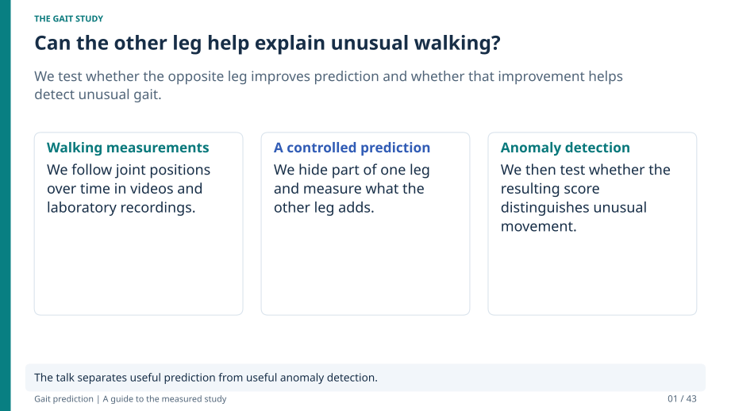
The talk separates useful prediction from useful anomaly detection.
Speaker notes for slide 1
Purpose
Gait means the way a person walks. Introduce the study through a practical question: can observations of the other leg help a model understand movement that appears unusual?
Explanation
Walking usually repeats, but a repeated movement can still reflect a limitation or an adaptation. A model may also make a large prediction error because the recording hides useful information. We therefore examine two questions separately: whether the other leg improves a prediction, and whether the resulting measurement helps distinguish normal from abnormal recordings.
Reading the visual
Read the three panels as the path through the study. Walking measurements provide the observations. Controlled prediction tests what the other leg adds to a hidden-movement estimate. Anomaly detection then asks whether that added information helps distinguish normal-labeled from abnormal-labeled recordings. The two datasets are introduced later.
Evidence and limits
These summaries come from completed experiments with real recordings and separately fitted laboratory models. The study is exploratory, and its main contribution is a controlled comparison with inspectable inputs, predictions and scores. The following slides explain that comparison before interpreting its numerical results.
Transition
To make the comparison concrete, consider what a model could use when a short part of the left ankle's movement is hidden.
Sources: Executed protocol · Verified study results · Accessible manuscript and technical notes
Plain-language guide to M, R and S
Movement score M
This score summarizes what the movement looks like. In the video study, its 16 measurements describe knee posture, how far the ankles move, changes in movement speed, trunk tilt, and differences between the two sides. The laboratory study instead uses 12 measurements of joint-angle levels and ranges. M compares the observed pattern with the normal fitting group. A larger score means a more unusual combination of these visible measurements.
Cross-leg score R
First, compare two predictions of the same hidden movement. Both retain the initial own-leg estimate. One adds a correction using only that leg, while the other adds a correction that can also see the opposite leg. Subtract the both-leg squared error from the own-leg squared error to measure the added benefit. Next, compare the left-leg and right-leg benefits with separate normal references. The same reserved reference group supplies both sides. R is larger when those benefits are unusually high or unusually low.
What normal-reference scaling means
For each leg, the study subtracts the normal reference mean benefit from the observed benefit. It then divides by an estimated normal standard deviation, which measures the spread of reference benefits, and squares the result. R averages these two squared departures. This is the meaning of calibration here. It measures departure from the reference; it does not produce a probability of disease. Each video fold has five separate normal reference recordings. Each laboratory fold has 20 separate healthy reference participants.
Combined score S
S adds the movement score M and the cross-leg score R, then divides by two. Thus it gives the two numerical scores fixed equal weight. Equal weights do not guarantee that the two scores have equally reliable scales or equal influence on ranking. The experiment tests whether this particular average improves detection.
Prediction benefit and detection accuracy
Prediction benefit means a reduction in error for a hidden movement. Detection accuracy means better separation of normal-labeled and abnormal-labeled recordings. A useful prediction benefit does not automatically improve detection. AUROC summarizes how often an abnormal recording receives a higher score than a normal recording; 0.5 is chance ranking and 1.0 is perfect ranking on the evaluated data. Here, ranking is measured within each held-out test group, then averaged with fixed weights.
Read the slide as text
THE GAIT STUDY
Can the other leg help explain unusual walking?
We test whether the opposite leg improves prediction and whether that improvement helps
detect unusual gait.
The talk separates useful prediction from useful anomaly detection.
Gait prediction | A guide to the measured study
01 / 43
Walking measurements
We follow joint positions
over time in videos and
laboratory recordings.
A controlled prediction
We hide part of one leg
and measure what the
other leg adds.
Anomaly detection
We then test whether the
resulting score
distinguishes unusual
movement.
2. Start with a short hidden part of the left ankle.
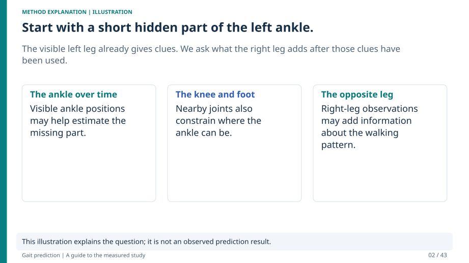
This illustration explains the question; it is not an observed prediction result.
Speaker notes for slide 2
Purpose
Use one hidden-ankle example to explain why seeing more of the body is not automatically evidence that a model has learned a useful relationship between the legs.
Explanation
Suppose we hide the left ankle for four consecutive samples. Ankle observations immediately before and after the gap may suggest a smooth continuation. The visible left knee, heel and front of the foot may provide further geometric clues. We can then ask whether the right leg improves the estimate after these same-leg clues have already been used.
Reading the visual
Read the three panels from left to right as sources of information for the same missing movement. They progress from the target joint's history, to nearby joints on its own leg, and then to the opposite leg. The answer being predicted stays fixed throughout this comparison.
Evidence and limits
This is an illustration of the experimental question. In the actual study, we hide observations that have been measured and retain their values for scoring. Naturally unavailable coordinates cannot supply those answers. Better reconstruction under artificial hiding therefore concerns the recorded measurements and their declared input conditions.
Transition
Before deciding which movement relationships to measure, it helps to consider why different health conditions can produce different adaptations during walking.
Sources: Neurological evidence and novelty advice · Executed protocol
Read the slide as text
METHOD EXPLANATION | ILLUSTRATION
Start with a short hidden part of the left ankle.
The visible left leg already gives clues. We ask what the right leg adds after those clues have
been used.
This illustration explains the question; it is not an observed prediction result.
Gait prediction | A guide to the measured study
02 / 43
The ankle over time
Visible ankle positions
may help estimate the
missing part.
The knee and foot
Nearby joints also
constrain where the
ankle can be.
The opposite leg
Right-leg observations
may add information
about the walking
pattern.
3. Different conditions can change walking in different ways.
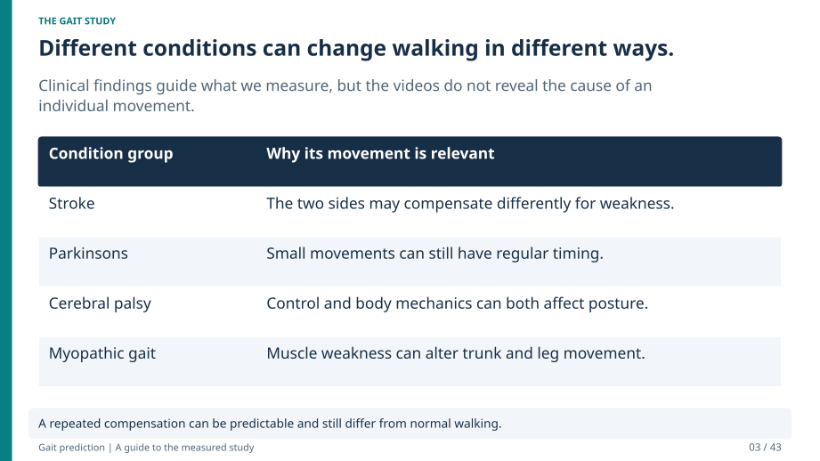
A repeated compensation can be predictable and still differ from normal walking.
Speaker notes for slide 3
Purpose
Explain how clinical knowledge motivates the measurements while keeping the distinction between an observed walking pattern and its possible cause clear.
Explanation
After stroke, weakness and altered control can affect the two sides differently. Parkinsonian gait may involve smaller movements or reduced arm swing, even when some aspects of timing remain regular. Cerebral palsy combines motor-control and musculoskeletal limitations. Myopathic conditions involve muscle disease and can change how the trunk and pelvis contribute to walking. People can adapt to these limitations in different ways.
Reading the visual
Read each row as a condition family paired with a plausible movement consequence. The rows explain why we retain several kinds of observable information. They do not assign a diagnosis to a video or claim that every person in a category walks in the same way.
Evidence and limits
The linked clinical studies motivate these examples. GAVD supplies annotation categories, while lesion location, medication, muscle strength, electrical muscle activity and walking forces are unavailable here. A repeatable compensation may be unusual yet predictable, which makes raw prediction error an incomplete description of abnormality.
Transition
These examples suggest that movement size, relative timing and stable compensation should remain distinguishable in the measurements we give the models.
Sources: Neurological evidence and novelty advice · Stroke coordination and temporal symmetry · PD arm amplitude, symmetry and coordination · Selective motor control and gait in CP · Longitudinal Duchenne muscle and gait observations
Read the slide as text
THE GAIT STUDY
Different conditions can change walking in different ways.
Clinical findings guide what we measure, but the videos do not reveal the cause of an
individual movement.
A repeated compensation can be predictable and still differ from normal walking.
Gait prediction | A guide to the measured study
03 / 43
Condition group
Why its movement is relevant
Stroke
The two sides may compensate differently for weakness.
Parkinsons
Small movements can still have regular timing.
Cerebral palsy
Control and body mechanics can both affect posture.
Myopathic gait
Muscle weakness can alter trunk and leg movement.
4. Keep posture and movement size visible to the model.
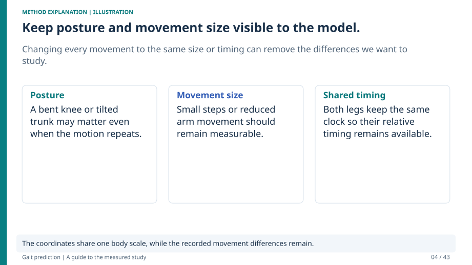
The coordinates share one body scale, while the recorded movement differences remain.
Speaker notes for slide 4
Purpose
Show why preprocessing should preserve observable differences that might matter for gait analysis, including how far a joint moves and how the two sides move together.
Explanation
Movement amplitude describes the size of a movement. A small excursion can repeat regularly, while an ordinary-sized movement can occur at an unusual time relative to the other leg. If every joint is rescaled separately, a small excursion may become indistinguishable from a larger one. Independently aligning each leg's cycle can similarly remove the timing relationship we hoped to examine.
Reading the visual
The panels show posture, movement size and shared timing. Posture describes how the joints and trunk are positioned. Movement size describes how far they travel. Shared timing preserves when the two legs move relative to each other. These examples motivate the measurements; they are not measured disease-specific curves.
Evidence and limits
The video representation uses a shared body reference and preserves elapsed time on a shared 15 Hz grid without independently aligning each leg to its own walking cycle. It centers positions on the pelvis and uses one torso scale, while retaining trunk tilt and differences between the limbs. These image measurements still depend on camera view and do not directly measure physical walking speed or ground clearance.
Transition
We examine these ideas in two datasets that provide different observations: varied web videos and synchronized laboratory joint angles.
Sources: Neurological evidence and novelty advice · Executed protocol
Read the slide as text
METHOD EXPLANATION | ILLUSTRATION
Keep posture and movement size visible to the model.
Changing every movement to the same size or timing can remove the differences we want to
study.
The coordinates share one body scale, while the recorded movement differences remain.
Gait prediction | A guide to the measured study
04 / 43
Posture
A bent knee or tilted
trunk may matter even
when the motion repeats.
Movement size
Small steps or reduced
arm movement should
remain measurable.
Shared timing
Both legs keep the same
clock so their relative
timing remains available.
5. The study uses videos and laboratory measurements.
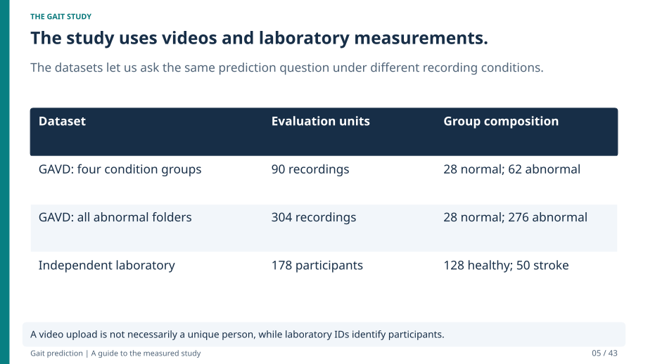
A video upload is not necessarily a unique person, while laboratory IDs identify participants.
Speaker notes for slide 5
Purpose
Introduce the two observation settings and explain what an independent laboratory comparison adds to the video study.
Explanation
GAVD contains web videos with annotated walking sequences. Its variety makes it useful for studying estimated body positions under different cameras and recording conditions. The laboratory dataset provides simultaneous angles from both legs and explicit participant identities. We fit new models to those angles, allowing us to examine the prediction comparison with a different measurement system.
Reading the visual
The table separates the main GAVD comparison, the broader GAVD analysis and the laboratory population. The main video comparison contains 90 recordings, including 28 normal recordings. The broader analysis uses 304 recordings with the same 28 normals. The laboratory study contains 128 healthy and 50 stroke participants.
Evidence and limits
A GAVD upload is a recording unit, and different uploads may show the same person. Laboratory identifiers support participant-level separation. Many overlapping windows from one recording provide repeated measurements rather than new people. The datasets also have different units and populations, so we keep their errors and rankings separate instead of pooling them.
Transition
With the observation settings established, we can place our prediction task alongside existing approaches to learning from skeleton sequences.
Sources: Executed protocol · Verified study results
Read the slide as text
THE GAIT STUDY
The study uses videos and laboratory measurements.
The datasets let us ask the same prediction question under different recording conditions.
A video upload is not necessarily a unique person, while laboratory IDs identify participants.
Gait prediction | A guide to the measured study
05 / 43
Dataset
Evaluation units
Group composition
GAVD: four condition groups
90 recordings
28 normal; 62 abnormal
GAVD: all abnormal folders
304 recordings
28 normal; 276 abnormal
Independent laboratory
178 participants
128 healthy; 50 stroke
6. Prediction can use coordinates or learned features.
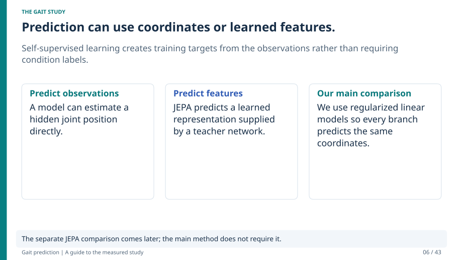
The separate JEPA comparison comes later; the main method does not require it.
Speaker notes for slide 6
Purpose
Explain the difference between predicting an observable joint position and predicting a learned representation, so the audience can follow the study without prior JEPA knowledge.
Explanation
Self-supervised learning creates a learning task from the data themselves, such as hiding part of a sequence and predicting what was removed. A Joint Embedding Predictive Architecture, or JEPA, predicts learned features supplied by a teacher network. Those features summarize the input. Our core experiment predicts coordinates or laboratory angles with regularized linear models, giving every branch the same observable answer.
Reading the visual
The three panels distinguish predicting observations, predicting learned features and the main comparison in this study. Coordinate prediction is checked against recorded positions or angles. Feature prediction is checked against a learned representation. The third panel explains why a common observable answer helps us compare the effect of different inputs.
Evidence and limits
GenGait, FSGait and SeeKer already study normal movement or conditional pose behavior. Beyond Marginals examines dependencies between signals, and SLiM uses anatomical masking. Our contribution concerns the controlled comparison and its evaluation. Separate small JEPA experiments are reported later and do not establish that JEPA causes the core completion gains.
Transition
To make an observable-answer experiment credible, we first need to trace how annotations and downloaded videos become the joint measurements used for training.
Sources: GenGait author manuscript · FSGait · SeeKer · Beyond Marginals · SLiM current author manuscript · Neurological evidence and novelty advice · Accessible manuscript and technical notes
Read the slide as text
THE GAIT STUDY
Prediction can use coordinates or learned features.
Self-supervised learning creates training targets from the observations rather than requiring
condition labels.
The separate JEPA comparison comes later; the main method does not require it.
Gait prediction | A guide to the measured study
06 / 43
Predict observations
A model can estimate a
hidden joint position
directly.
Predict features
JEPA predicts a learned
representation supplied
by a teacher network.
Our main comparison
We use regularized linear
models so every branch
predicts the same
coordinates.
7. Follow each recording from annotation to joint coordinates.
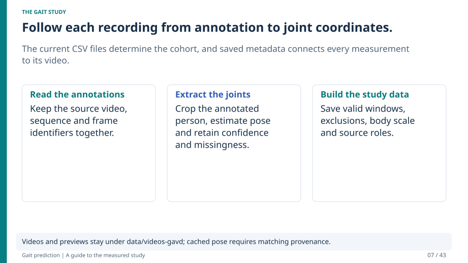
Videos and previews stay under data/videos-gavd; cached pose requires matching provenance.
Speaker notes for slide 7
Purpose
Explain the data-processing path so that every prediction can be traced back to an annotated walking interval and its local video.
Explanation
The refreshed files in data/gavd provide category labels and annotated sequences. Downloads belong under data/videos-gavd. The pose pipeline crops the annotated person, estimates body landmarks and maps their positions back into the full image. Coordinates with insufficient confidence remain unavailable. A plausible-looking pose can still follow the wrong person, so extraction quality needs direct video inspection.
Reading the visual
Follow the panels from annotations, through video and pose extraction, to the retained cohort record. Each stage contributes information needed to reproduce the next. Recording identifiers connect sequences and windows to the same source rather than treating every short segment as a separate person.
Evidence and limits
Reusable pose files require matching video and extraction provenance, while category labels are rebuilt from the current annotation files. The retained 304-recording population follows explicit quality and observation requirements. The saved evidence includes source mappings, unavailable measurements and exclusion reasons, allowing another researcher to check who actually enters a result.
Transition
Once this processing path is clear, we can examine the category counts and the distinction between detecting abnormal gait and predicting a specific condition label.
Sources: Read-only data and ingestion review · Executed protocol · Independent notebooks 12–17
Read the slide as text
THE GAIT STUDY
Follow each recording from annotation to joint coordinates.
The current CSV files determine the cohort, and saved metadata connects every measurement
to its video.
Videos and previews stay under data/videos-gavd; cached pose requires matching provenance.
Gait prediction | A guide to the measured study
07 / 43
Read the annotations
Keep the source video,
sequence and frame
identifiers together.
Extract the joints
Crop the annotated
person, estimate pose
and retain confidence
and missingness.
Build the study data
Save valid windows,
exclusions, body scale
and source roles.
8. The main video comparison contains 90 recordings.
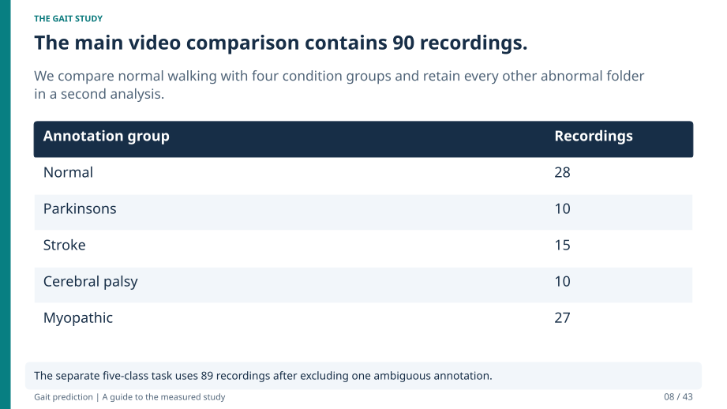
The separate five-class task uses 89 recordings after excluding one ambiguous annotation.
Speaker notes for slide 8
Purpose
Clarify the two label-based questions and make the small number of recordings in each condition family visible.
Explanation
The main binary task asks whether a recording is labeled normal or belongs to one of four selected condition groups. It includes 28 normal, 10 Parkinsons, 15 stroke, 10 cerebral-palsy and 27 myopathic recordings, totaling 90. A separate five-class task asks which category applies, so it requires an unambiguous category label and uses a different eligibility rule.
Reading the visual
Read the table as recording counts for the main comparison. The sizes describe the available groups rather than verified numbers of independent patients. The normal folder supplies the normal category, and the selected non-normal folders supply the abnormal side of the binary comparison.
Evidence and limits
One cerebral-palsy recording also carries a generic abnormal annotation. It remains one recording in binary evaluation but is excluded from the five-class experiment under the fixed ambiguity rule, leaving 89 recordings. The broader secondary binary analysis uses all non-normal folders. None of these folder labels is independently revalidated as a clinical diagnosis.
Transition
These recordings produce many short windows, so the next step is to distinguish the amount of movement observed from the number of independent evaluation units.
Sources: Executed protocol · Verified study results
Read the slide as text
THE GAIT STUDY
The main video comparison contains 90 recordings.
We compare normal walking with four condition groups and retain every other abnormal folder
in a second analysis.
The separate five-class task uses 89 recordings after excluding one ambiguous annotation.
Gait prediction | A guide to the measured study
08 / 43
Annotation group
Recordings
Normal
28
Parkinsons
10
Stroke
15
Cerebral palsy
10
Myopathic
27
9. A short window contains several related observations.
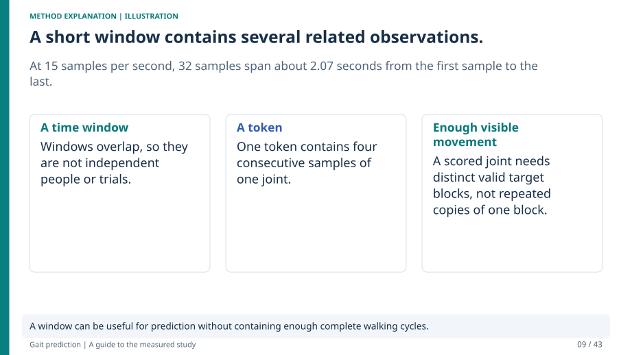
A window can be useful for prediction without containing enough complete walking cycles.
Speaker notes for slide 9
Purpose
Explain what one model window contains and why adding windows or masks does not create additional independent evidence.
Explanation
The video measurements are sampled 15 times per second. A window contains 32 samples, spanning 31 intervals or about 2.07 seconds. Within a window, a token is one joint observed over four consecutive samples. Walking speed varies, so the same duration does not guarantee a fixed number of complete walking cycles. Longer windows can provide more context but also exclude short or incomplete recordings.
Reading the visual
Read the panels from a window to a token and then to the support required for a measured target. An overlapping window is one short interval, while a token contains four samples of one joint. Distinct target support counts different hidden intervals, not repeated masks of the same interval. None of these units is an independent participant.
Evidence and limits
The retained video population supplies 9,442 overlapping windows from 304 recordings. Evaluation groups these measurements by their recording. Each scored joint must have four distinct physical target blocks, and drawing another mask over an existing block cannot increase that support count. Timing tests use a separate 48-sample parent interval.
Transition
Having defined the time window and token, we can identify which body landmarks enter the model and which ones contribute to its final joint-specific measurements.
Sources: Executed protocol · Read-only data and ingestion review · Confidence filtering and selection shift
Read the slide as text
METHOD EXPLANATION | ILLUSTRATION
A short window contains several related observations.
At 15 samples per second, 32 samples span about 2.07 seconds from the first sample to the
last.
A window can be useful for prediction without containing enough complete walking cycles.
Gait prediction | A guide to the measured study
09 / 43
A time window
Windows overlap, so they
are not independent
people or trials.
A token
One token contains four
consecutive samples of
one joint.
Enough visible
movement
A scored joint needs
distinct valid target
blocks, not repeated
copies of one block.
10. Use a fixed set of 16 joints and score the lower legs.
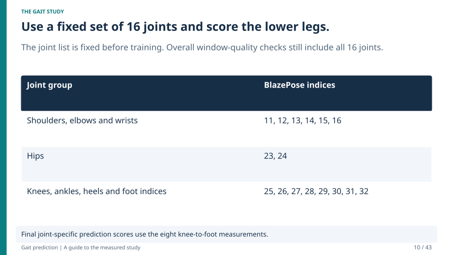
Final joint-specific prediction scores use the eight knee-to-foot measurements.
Speaker notes for slide 10
Purpose
Separate the landmarks available to the processing pipeline from the lower-leg targets used to summarize prediction performance.
Explanation
The fixed input set contains 16 BlazePose landmarks. Indices 11 through 16 cover paired shoulders, elbows and wrists; 23 and 24 are the hips; and 25 through 32 cover knees, ankles, heels and foot-index points near the front of each foot. The eight lower-leg landmarks supply the joint-specific readouts. Overall window-quality checks still include all 16 landmarks, so missing arms can affect eligibility.
Reading the visual
Read the table by anatomical role. The upper row belongs to the masking and overall quality-check set; it does not grant unrestricted arm access to the leg predictors. The hip row contributes to the shared body reference, and the lower row contains the scored targets. Each predictor receives only its permitted leg observations, conditional on that shared reference.
Evidence and limits
Coordinates are centered on the pelvis and divided by a torso scale from the first half of the window. Both prediction branches share this body reference. Consequently, an own-leg input restriction is conditional on that reference and cannot establish independence from every opposite-side body measurement.
Transition
The measurements are now defined. We next assign recordings to fitting, reference estimation and testing so that those stages do not reuse the same evaluation observations.
Sources: Executed protocol · Verified study results
Read the slide as text
THE GAIT STUDY
Use a fixed set of 16 joints and score the lower legs.
The joint list is fixed before training. Overall window-quality checks still include all 16 joints.
Final joint-specific prediction scores use the eight knee-to-foot measurements.
Gait prediction | A guide to the measured study
10 / 43
Joint group
BlazePose indices
Shoulders, elbows and wrists
11, 12, 13, 14, 15, 16
Hips
23, 24
Knees, ankles, heels and foot indices
25, 26, 27, 28, 29, 30, 31, 32
11. Give fitting, reference estimation and testing separate roles.
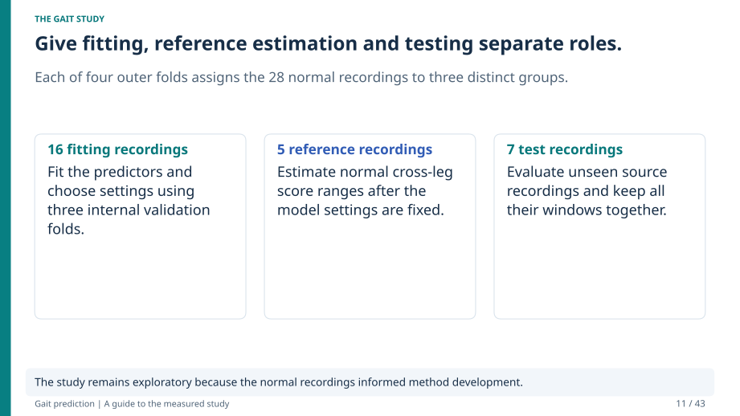
The study remains exploratory because the normal recordings informed method development.
Speaker notes for slide 11
Purpose
Explain the different jobs of fitting, reference and test recordings, especially why normal examples are needed for more than model training.
Explanation
The study uses four rotations of the evaluation split, called folds. In each fold, 16 normal recordings fit the prediction models, five other normals describe the usual range of cross-leg benefit, and seven normals are held out for testing. Abnormal recordings are evaluated without training these normal-only models. Separately labeled supervised classifiers use their own training labels.
Reading the visual
Read the three panels as distinct groups of recordings. Fitting includes internal validation for choosing model settings. Reference estimation establishes the normal comparison range after those settings are chosen. Testing measures behavior on recordings excluded from both jobs in that fold. All overlapping windows from a recording remain together.
Evidence and limits
The five reference recordings do not choose model settings or score weights. The 28 normal GAVD recordings informed method development, so this remains exploratory despite the within-experiment separation. Different fold models share training sources, and unknown repeated people across uploads remain possible. The laboratory study separately assigns participant identities.
Transition
With these roles in place, we can fit a local prediction once and ask what each additional correction contributes to the same hidden answer.
Sources: Executed protocol · Verified study results
Read the slide as text
THE GAIT STUDY
Give fitting, reference estimation and testing separate roles.
Each of four outer folds assigns the 28 normal recordings to three distinct groups.
The study remains exploratory because the normal recordings informed method development.
Gait prediction | A guide to the measured study
11 / 43
16 fitting recordings
Fit the predictors and
choose settings using
three internal validation
folds.
5 reference recordings
Estimate normal cross-leg
score ranges after the
model settings are fixed.
7 test recordings
Evaluate unseen source
recordings and keep all
their windows together.
12. Compare two corrections to the same own-leg baseline.
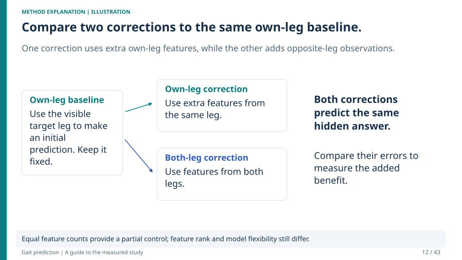
Equal feature counts provide a partial control; feature rank and model flexibility still differ.
Speaker notes for slide 12
Purpose
Make the three prediction branches explicit and explain why the central comparison includes an additional own-leg correction.
Explanation
The Own-leg baseline f predicts the hidden movement from visible observations on the target leg. After fitting, its output stays fixed. The Own-leg correction f+h adds movement summaries from that same leg. The Both-leg correction f+g adds opposite-leg information while retaining the baseline. Comparing f+h with f+g helps distinguish useful added context from the benefit of fitting an extra correction.
Reading the visual
Follow the saved baseline into the two correction branches. Both end at predictions of the identical target, so their squared errors can be compared directly. The benefit is own-leg-correction error minus both-leg-correction error. A positive value means that the both-leg branch predicts more accurately for that target.
Evidence and limits
Both corrections have 154 input features and can choose zero correction, which reproduces the baseline. Their recorded numerical feature ranks differ, however, so equal width does not equalize all modeling flexibility. Input restrictions also remain conditional on the shared body reference. The measured gain applies to these fitted predictor families.
Transition
Before interpreting such a gain, we need checks that the implementation respects its input restrictions and that the prediction task is learnable from the available normal observations.
Sources: Executed protocol · Verified study results
Read the slide as text
METHOD EXPLANATION | ILLUSTRATION
Compare two corrections to the same own-leg baseline.
One correction uses extra own-leg features, while the other adds opposite-leg observations.
Equal feature counts provide a partial control; feature rank and model flexibility still differ.
Gait prediction | A guide to the measured study
12 / 43
Own-leg baseline
Use the visible
target leg to make
an initial
prediction. Keep it
fixed.
Own-leg correction
Use extra features from
the same leg.
Both-leg correction
Use features from both
legs.
Both corrections
predict the same
hidden answer.
Compare their errors to
measure the added
benefit.
13. Check the predictor before interpreting its behavior.
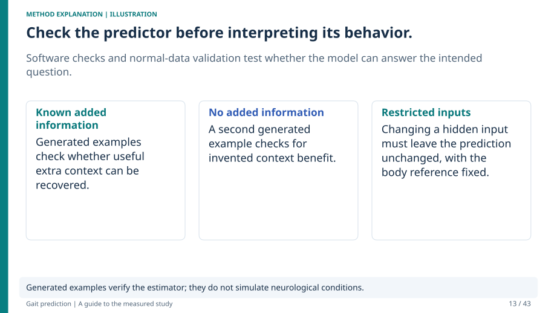
Generated examples verify the estimator; they do not simulate neurological conditions.
Speaker notes for slide 13
Purpose
Explain the checks that distinguish a useful prediction comparison from a software error or a predictor that cannot solve its assigned task.
Explanation
Generated examples can make the additional input genuinely informative or deliberately uninformative about the target. These cases check whether the estimator responds in the expected direction. Other checks change inaccessible inputs or set a correction to zero. The predictions should remain unchanged when hidden inputs change, and zero correction should return the saved baseline exactly.
Reading the visual
Read the panels as three complementary checks: recovering known dependence, avoiding invented dependence, and enforcing the information-access rules. Passing a generated example validates a particular behavior of the implementation. The next requirement uses real normal recordings with the same input conditions as the intended prediction task.
Evidence and limits
Normal-only internal validation requires the both-leg predictor to beat both local alternatives in at least two of three folds and in their average error. This is an operational selection rule. A failure disables the relational component while retaining movement-based ranking within the fold. Adequacy must be checked again when a diagnostic removes additional observations.
Transition
The pattern of hidden observations is therefore part of the question we are testing. We now specify the three training patterns before comparing their effects.
Sources: Executed protocol · Verified study results
Read the slide as text
METHOD EXPLANATION | ILLUSTRATION
Check the predictor before interpreting its behavior.
Software checks and normal-data validation test whether the model can answer the intended
question.
Generated examples verify the estimator; they do not simulate neurological conditions.
Gait prediction | A guide to the measured study
13 / 43
Known added
information
Generated examples
check whether useful
extra context can be
recovered.
No added information
A second generated
example checks for
invented context benefit.
Restricted inputs
Changing a hidden input
must leave the prediction
unchanged, with the
body reference fixed.
14. Three training masks hide observations in different patterns.
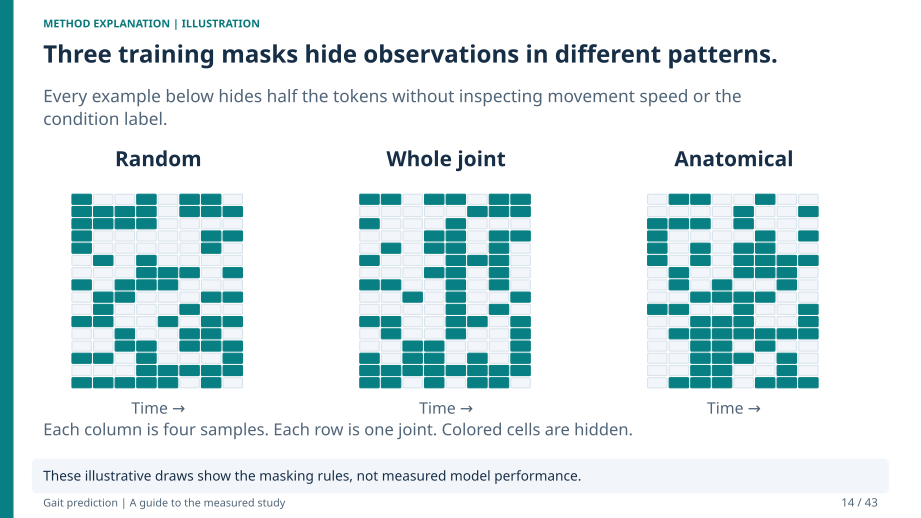
These illustrative draws show the masking rules, not measured model performance.
Speaker notes for slide 14
Purpose
Introduce the three masking methods as different ways of hiding observations together while keeping the total hidden amount fixed.
Explanation
Each window has eight time blocks for each of 16 joints, giving 128 tokens. Random U hides 64 tokens uniformly. Whole joint J hides all eight blocks of one randomly selected joint, then fills the remaining budget with 56 random tokens. Anatomical A hides an eight-token group covering a small body region over consecutive times and then adds 56 random tokens.
Reading the visual
In each grid, rows identify joint landmarks and columns identify four-sample time blocks. Teal cells are hidden; pale cells are visible before measurement-validity checks. All hidden cells use the same color, whether they belong to the structured core or the random fill. The anatomical draw illustrates one permitted group; other draws can hide other declared body groups.
Evidence and limits
The drawings illustrate implemented sampling rules rather than model predictions. None of the methods consults movement speed, confidence, condition labels or prediction loss when choosing masks. Naturally invalid observations are filtered afterward without redrawing a more favorable mask. This deliberately separates masking from motion-aware sampling used in related skeleton methods.
Transition
An equal total is only one control. The next slide shows how the structured choices also give each individual token the same probability of being hidden.
Sources: Controlled masking methods review · MAMP primary paper · Skeleton S-JEPA primary paper · SLiM current author manuscript · Executed protocol
Read the slide as text
METHOD EXPLANATION | ILLUSTRATION
Three training masks hide observations in different patterns.
Every example below hides half the tokens without inspecting movement speed or the
condition label.
These illustrative draws show the masking rules, not measured model performance.
Gait prediction | A guide to the measured study
14 / 43
Random
Time →
Whole joint
Time →
Anatomical
Time →
Each column is four samples. Each row is one joint. Colored cells are hidden.
15. Keep the hiding rate equal while changing the pattern.
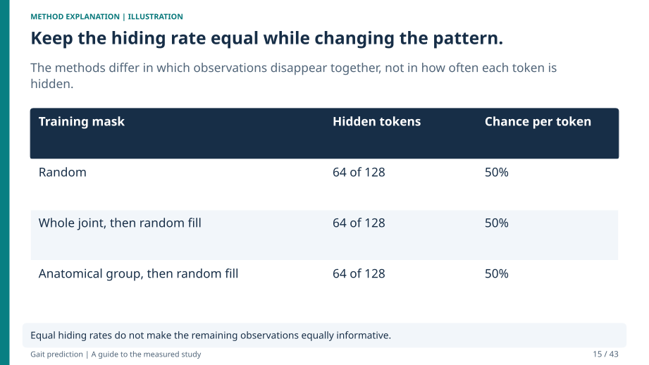
Equal hiding rates do not make the remaining observations equally informative.
Speaker notes for slide 15
Purpose
Explain the probability control behind anatomical masking without implying that equally frequent hiding makes every reconstruction task equally difficult.
Explanation
The anatomical groups are disjoint and cover the 16 landmarks. A four-joint group occupies two consecutive time blocks, while a two-joint arm group occupies four blocks. Every structured core therefore contains eight tokens. Choosing groups in proportion to their width and choosing among the listed aligned starts gives each token a one-in-sixteen chance of entering that core.
Reading the visual
Read across the three training-mask rows. Each hides exactly 64 of 128 tokens, and every individual token has a 50% chance of being hidden. The equal totals and probabilities are the controls shown in this table. The eight-token-core calculation explains how the structured policies achieve those controls; it is not a separate table of body groups on this slide.
Evidence and limits
A token outside the core can still be selected when 56 of the other 120 positions are filled. Its total hiding probability is 1/16 plus 15/16 times 56/120, which equals one half. Random U and Whole joint J have the same individual probability. Correlations between hidden positions and the number of usable targets can still differ.
Transition
These controls define comparable training procedures. We next keep the evaluation masks fixed so that a training difference is measured against the same prediction question.
Sources: Executed protocol · Verified study results
Read the slide as text
METHOD EXPLANATION | ILLUSTRATION
Keep the hiding rate equal while changing the pattern.
The methods differ in which observations disappear together, not in how often each token is
hidden.
Equal hiding rates do not make the remaining observations equally informative.
Gait prediction | A guide to the measured study
15 / 43
Training mask
Hidden tokens
Chance per token
Random
64 of 128
50%
Whole joint, then random fill
64 of 128
50%
Anatomical group, then random fill
64 of 128
50%
16. Test every training mask on the same two hiding tasks.
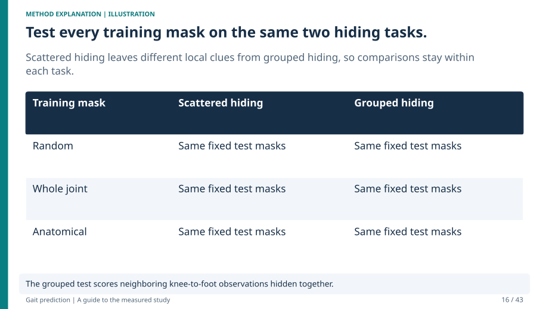
The grouped test scores neighboring knee-to-foot observations hidden together.
Speaker notes for slide 16
Purpose
This slide explains how we compare training masks fairly. If each model were tested on a different pattern of missing joints, a performance difference could reflect the question we asked rather than what the model learned.
Explanation
We therefore give Random U, Whole joint J and Anatomical A the same saved test masks. Scattered hiding (U bank) removes observations throughout the window. Grouped hiding E_leg deliberately removes neighboring lower-leg observations together, making nearby joints less available as clues. These are two distinct completion tasks, and each is evaluated separately.
Reading the visual
Read across each training-method row. Every method is tested on both scattered and grouped hiding, using the saved masks for each task. Within either column, the same physical targets and mask draws support the comparison, rather than a fresh random test for each method.
Evidence and limits
Both banks contain 16 masks, each hiding 64 of 128 tokens. Grouped hiding E_leg balances left and right legs and four temporal starts, and scores only the eight deliberately grouped tokens in each mask. The stored banks make these comparisons reproducible. Matching the number hidden does not make the two tasks equally difficult.
Transition
With the evaluation questions fixed, the next slide identifies which parts of model fitting change across the three training methods and which parts remain shared.
Sources: Executed protocol · Verified study results
Read the slide as text
METHOD EXPLANATION | ILLUSTRATION
Test every training mask on the same two hiding tasks.
Scattered hiding leaves different local clues from grouped hiding, so comparisons stay within
each task.
The grouped test scores neighboring knee-to-foot observations hidden together.
Gait prediction | A guide to the measured study
16 / 43
Training mask
Scattered hiding
Grouped hiding
Random
Same fixed test masks
Same fixed test masks
Whole joint
Same fixed test masks
Same fixed test masks
Anatomical
Same fixed test masks
Same fixed test masks
17. Hold the rest of the prediction experiment fixed.
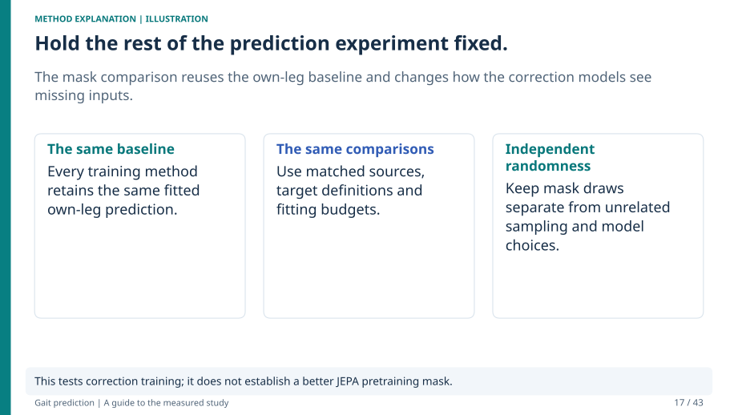
This tests correction training; it does not establish a better JEPA pretraining mask.
Speaker notes for slide 17
Purpose
This slide locates the masking experiment within the model. It tests how different missing-observation patterns train the corrections, while preserving a common starting prediction for every comparison.
Explanation
The Own-leg baseline f is trained with Random U and then kept fixed. For each masking policy, the Own-leg correction f+h learns from the target leg, while the Both-leg correction f+g can also use the opposite leg. Normal-only internal validation selects regularization and correction size. Separate random streams prevent a mask choice from unintentionally changing the source sampling schedule.
Reading the visual
The first card identifies the shared baseline, the second identifies the matched comparisons, and the third explains separate random streams. A drawn mask can hide measurements that were already invalid, so equal masking budgets need not produce identical numbers of usable training targets. The saved support counts show that difference.
Evidence and limits
The two corrections each have 154 features and the same output dimension. Their recorded numerical ranks differ, so equal width does not establish equal effective flexibility. This completed comparison concerns coordinate predictors. It does not demonstrate an optimal JEPA encoder mask, and the separate JEPA experiment has its own training recipe.
Transition
The next slide checks whether these fitted corrections work adequately on normal development recordings before we interpret their behavior on held-out recordings.
Sources: Executed protocol · Verified study results
Read the slide as text
METHOD EXPLANATION | ILLUSTRATION
Hold the rest of the prediction experiment fixed.
The mask comparison reuses the own-leg baseline and changes how the correction models see
missing inputs.
This tests correction training; it does not establish a better JEPA pretraining mask.
Gait prediction | A guide to the measured study
17 / 43
The same baseline
Every training method
retains the same fitted
own-leg prediction.
The same comparisons
Use matched sources,
target definitions and
fitting budgets.
Independent
randomness
Keep mask draws
separate from unrelated
sampling and model
choices.
18. The corrections pass the internal prediction check.
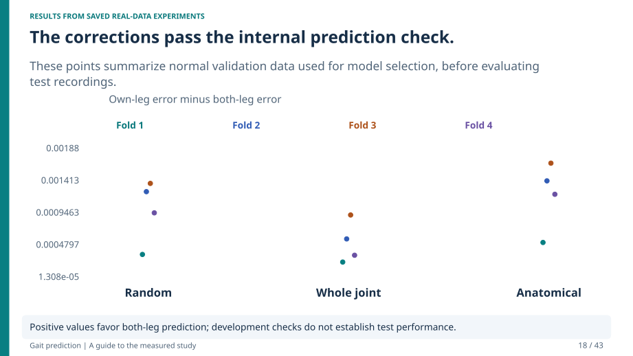
Positive values favor both-leg prediction; development checks do not establish test performance.
Speaker notes for slide 18
Purpose
Before using a cross-leg prediction as a measurement, we need evidence that the model can make useful predictions. This development check asks whether the Both-leg correction f+g improves on sensible local alternatives.
Explanation
Within each outer training set, three internal folds hold out normal recordings in turn. The selected both-leg recipe must improve on the Own-leg baseline f and the Own-leg correction f+h in at least two of those three folds, with improvement in the average validation loss as well. Abnormal labels do not choose these settings.
Reading the visual
Each point summarizes one outer fold and training policy. Positive values mean that the Both-leg correction f+g has lower validation error than the Own-leg correction f+h. The point plot shows one part of the check; the saved gate also compares against the baseline.
Evidence and limits
All 12 combinations of four outer folds and three masking policies pass the declared development rule. These are checks after model selection on the same development folds, so they are not independent test results. Passing permits evaluation; it cannot guarantee a benefit on every recording or observation pattern.
Transition
We now move from normal development data to the held-out normal recordings and examine how the prediction benefit changes between scattered and grouped hiding.
Sources: Executed protocol · Verified study results
Read the slide as text
RESULTS FROM SAVED REAL-DATA EXPERIMENTS
The corrections pass the internal prediction check.
These points summarize normal validation data used for model selection, before evaluating
test recordings.
Positive values favor both-leg prediction; development checks do not establish test performance.
Gait prediction | A guide to the measured study
18 / 43
Fold 1
Fold 2
Fold 3
Fold 4
Random
Whole joint
Anatomical
1.308e-05
0.0004797
0.0009463
0.001413
0.00188
Own-leg error minus both-leg error
19. Test-set prediction benefit depends on what is hidden.
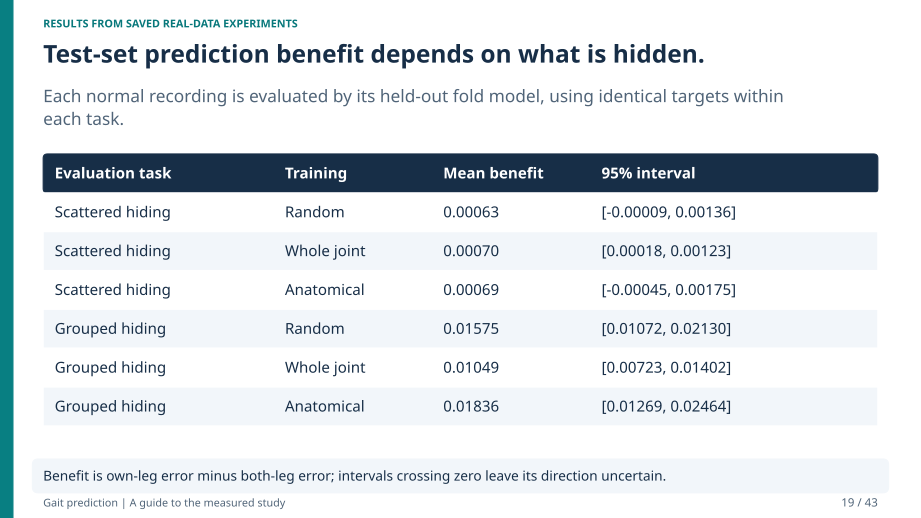
Benefit is own-leg error minus both-leg error; intervals crossing zero leave its direction uncertain.
Speaker notes for slide 19
Purpose
This slide asks the central completion question on held-out normal recordings: after using the target leg, how much does the fitted model gain from also using the other leg?
Explanation
Benefit is the error of the Own-leg correction f+h minus the error of the Both-leg correction f+g on the same hidden target. A positive value means that the both-leg prediction is more accurate. We calculate that difference for Random U, Whole joint J and Anatomical A under each fixed evaluation bank.
Reading the visual
First compare the three methods within Scattered hiding (U bank), then within Grouped hiding E_leg. Read the interval beside each mean, rather than ranking methods from the means alone. An interval crossing zero leaves the direction of the benefit uncertain under this analysis.
Evidence and limits
All 28 held-out normal recordings contribute to each result. On scattered hiding, the Random U and Anatomical A intervals include zero. All three grouped-hiding intervals are positive. Removing neighboring leg observations together makes opposite-leg context more useful to these fitted predictors, although the two banks ask different questions and their absolute errors are not interchangeable.
Transition
The next slide makes these predictions concrete by showing one saved coordinate patch alongside its measured target, before we return to the aggregate completion results.
Sources: Executed protocol · Verified study results
Read the slide as text
RESULTS FROM SAVED REAL-DATA EXPERIMENTS
Test-set prediction benefit depends on what is hidden.
Each normal recording is evaluated by its held-out fold model, using identical targets within
each task.
Benefit is own-leg error minus both-leg error; intervals crossing zero leave its direction uncertain.
Gait prediction | A guide to the measured study
19 / 43
Evaluation task
Training
Mean benefit
95% interval
Scattered hiding
Random
0.00063
[-0.00009, 0.00136]
Scattered hiding
Whole joint
0.00070
[0.00018, 0.00123]
Scattered hiding
Anatomical
0.00069
[-0.00045, 0.00175]
Grouped hiding
Random
0.01575
[0.01072, 0.02130]
Grouped hiding
Whole joint
0.01049
[0.00723, 0.01402]
Grouped hiding
Anatomical
0.01836
[0.01269, 0.02464]
20. Inspect one saved prediction alongside its hidden answer.
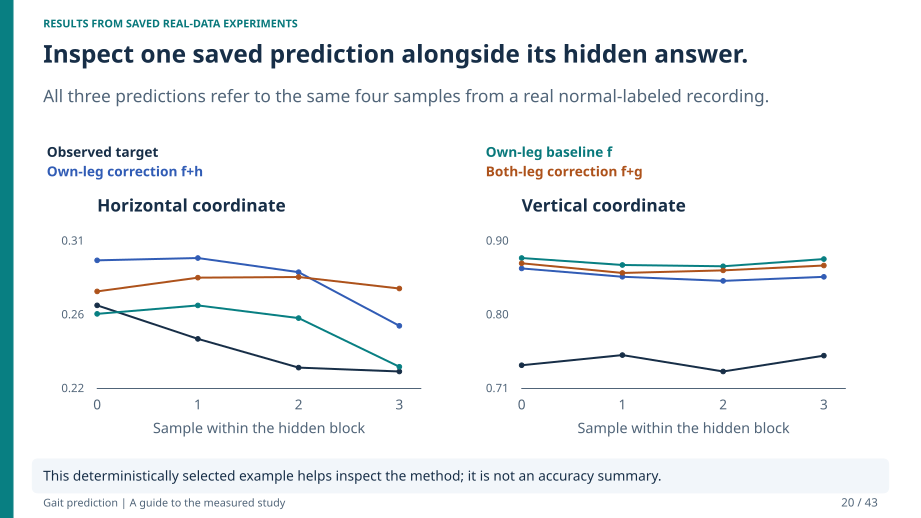
This deterministically selected example helps inspect the method; it is not an accuracy summary.
Speaker notes for slide 20
Purpose
This example connects the numerical experiment to an actual movement measurement. It lets us inspect what the three predictors produce for the same hidden patch instead of treating an error value as an abstract result.
Explanation
The observed target is a four-sample block from BlazePose joint 25, the left knee. The Own-leg baseline f predicts it from permitted target-leg observations. The Own-leg correction f+h adjusts that prediction using additional own-leg features, while the Both-leg correction f+g can also use opposite-leg observations. Every comparison retains the same target and body reference.
Reading the visual
Follow each predicted trace against the observed coordinate trace. The plotted coordinates use the experiment's body-centered, torso-scaled representation, so their values are not distances in meters. The accompanying source identifiers allow the corresponding video and pose overlay to be opened in notebook 13.
Evidence and limits
This is the saved example from source 3KnFt8bH3tE, sequence cljo2wwu7001a3n6ljmqm39l6, joint 25 and patch 1. It was selected deterministically by source and target order, not by the largest improvement. One patch helps audit coordinate order and target identity, but it does not estimate typical accuracy.
Transition
Having seen an individual prediction, we can now summarize completion gains across the normal recordings and the independent laboratory participants without mistaking this example for the overall result.
Sources: Executed protocol · Verified study results
Read the slide as text
RESULTS FROM SAVED REAL-DATA EXPERIMENTS
Inspect one saved prediction alongside its hidden answer.
All three predictions refer to the same four samples from a real normal-labeled recording.
This deterministically selected example helps inspect the method; it is not an accuracy summary.
Gait prediction | A guide to the measured study
20 / 43
Horizontal coordinate
0
1
2
3
0.22
0.26
0.31
Sample within the hidden block
Vertical coordinate
0
1
2
3
0.71
0.80
0.90
Sample within the hidden block
Observed target
Own-leg baseline f
Own-leg correction f+h
Both-leg correction f+g
21. The other leg helps complete two kinds of measurements.
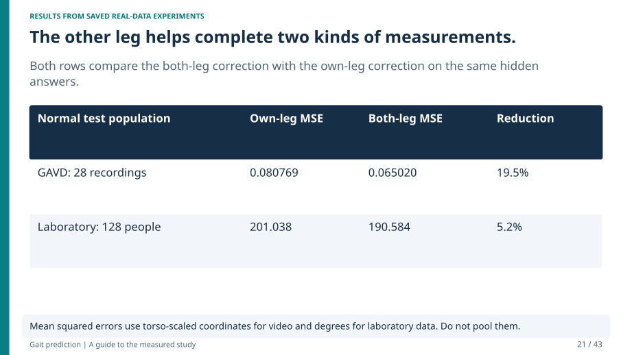
Mean squared errors use torso-scaled coordinates for video and degrees for laboratory data. Do not pool them.
Speaker notes for slide 21
Purpose
The two results here show where opposite-leg context improves completion across groups of held-out observations. They compare the Both-leg correction f+g with the Own-leg correction f+h, rather than comparing two training masks.
Explanation
In GAVD, Random U training reduces mean normal-recording error by 19.5% on Grouped hiding E_leg. In the laboratory data, the corresponding reduction is 5.2% across 128 held-out healthy participants. Each percentage divides the difference between group mean errors by the own-leg comparator's mean error. It is not an average of individual percentage improvements.
Reading the visual
Read the two results separately. GAVD predicts torso-scaled image coordinates, whereas the laboratory study predicts processed joint angles in degrees. The percentages communicate relative improvement within each study; the underlying error values should not be pooled across these measurement systems.
Evidence and limits
The GAVD absolute benefit is 0.015748, with conditional 95% interval [0.010721, 0.021300]. The laboratory relative interval is [3.6%, 6.7%], calculated after outcome inspection from frozen predictions. Neither interval includes retraining uncertainty. Different feature ranks also mean these gains establish useful fitted predictor families, rather than isolate a capacity-free neurological relationship.
Transition
The next slide asks a different question: using the same both-leg predictor design and evaluation targets, with the correction weights refitted, does Anatomical A training improve completion compared with Random U training?
Sources: Post-outcome paired completion audit · Accessible manuscript and technical notes · Executed protocol
Read the slide as text
RESULTS FROM SAVED REAL-DATA EXPERIMENTS
The other leg helps complete two kinds of measurements.
Both rows compare the both-leg correction with the own-leg correction on the same hidden
answers.
Mean squared errors use torso-scaled coordinates for video and degrees for laboratory data. Do not pool them.
Gait prediction | A guide to the measured study
21 / 43
Normal test population
Own-leg MSE
Both-leg MSE
Reduction
GAVD: 28 recordings
0.080769
0.065020
19.5%
Laboratory: 128 people
201.038
190.584
5.2%
22. Anatomical training helps when neighboring joints are hidden.
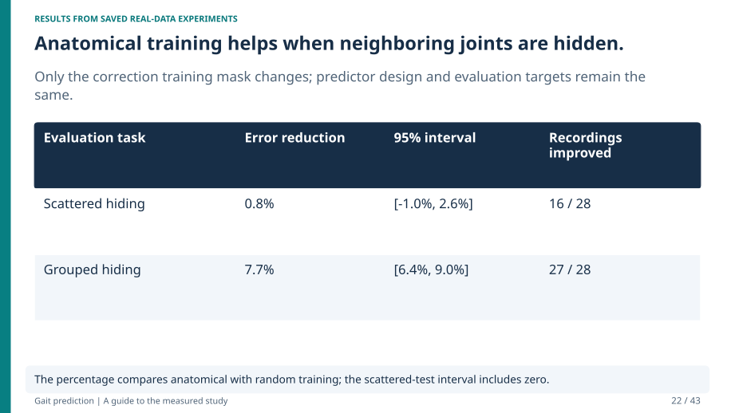
The percentage compares anatomical with random training; the scattered-test interval includes zero.
Speaker notes for slide 22
Purpose
This comparison tests the training mask itself. Both sides use the Both-leg correction f+g, so the question is whether Anatomical A training prepares that model better than Random U training for a particular missing-observation task.
Explanation
On Grouped hiding E_leg, mean error decreases from 0.065020 with Random U to 0.060009 with Anatomical A. That is a 7.7% reduction, with a conditional 95% interval from 6.4% to 9.0%. On Scattered hiding (U bank), the reduction is only 0.8%, with an interval from -1.0% to 2.6%.
Reading the visual
Use zero as the reference for the two relative-improvement estimates. The grouped-hiding interval stays above zero, while the scattered-hiding interval crosses it. The pattern supports matching training to a specific kind of missing context, rather than expecting the same advantage everywhere.
Evidence and limits
The paired audit verifies matching sources, physical targets and evaluation masks across the two training methods. On grouped hiding, 27 of 28 recordings improve. These intervals were calculated after inspecting saved outcomes and are descriptive, with models held fixed. The result concerns coordinate completion, not a new masking family, neurological mechanism or demonstrated anomaly-detection gain.
Transition
To examine anomaly detection, we next turn prediction benefit into a separate cross-leg score and explain how it is combined with directly observed movement.
Sources: Post-outcome paired completion audit · Accessible manuscript and technical notes · Executed protocol
Read the slide as text
RESULTS FROM SAVED REAL-DATA EXPERIMENTS
Anatomical training helps when neighboring joints are hidden.
Only the correction training mask changes; predictor design and evaluation targets remain the
same.
The percentage compares anatomical with random training; the scattered-test interval includes zero.
Gait prediction | A guide to the measured study
22 / 43
Evaluation task
Error reduction
95% interval
Recordings
improved
Scattered hiding
0.8%
[-1.0%, 2.6%]
16 / 28
Grouped hiding
7.7%
[6.4%, 9.0%]
27 / 28
23. The three anomaly scores describe different quantities.
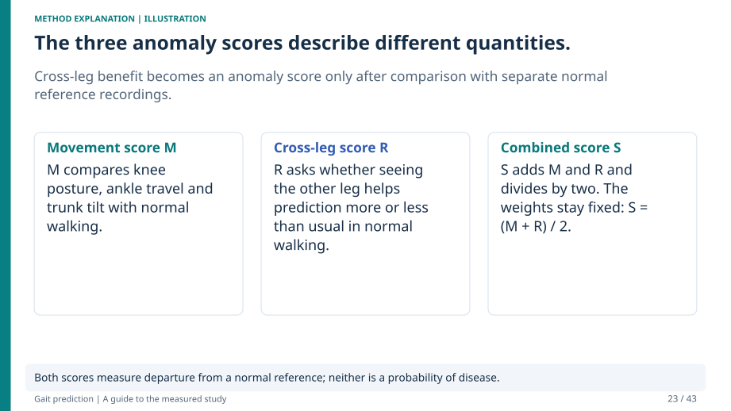
Both scores measure departure from a normal reference; neither is a probability of disease.
Speaker notes for slide 23
Purpose
Accurate completion and anomaly detection answer different questions. This slide explains how the study turns observed movement and cross-leg prediction benefit into separate recording-level anomaly scores.
Explanation
Movement M measures how unusual the visible posture and movement are. Its 16 video measurements describe knee posture, ankle travel, changes in movement speed, trunk tilt and side differences. Cross-leg R asks a different question: is the improvement from seeing the other leg unusual compared with separate normal reference recordings? Either an unusually large or unusually small improvement can increase R.
Reading the visual
Read the first two cards as separate measurements. M describes the visible movement. R describes how much the opposite leg helps predict a hidden part of movement, compared with the normal reference. The third card adds these two scores and divides by two to form S. The weights stay fixed rather than being selected to improve the test results.
Evidence and limits
M learns its reference from fitting-normal recordings. R uses five different normal recordings reserved until after model selection. For each target leg, R subtracts the normal mean benefit, scales the difference by estimated normal variation, and squares it; the final score averages the two legs. This reference scaling does not produce a probability of disease. Five recordings give an uncertain estimate, and equal weights do not guarantee equally reliable score scales.
Transition
Before comparing these scores, the next slide explains how repeated predictions become one recording-level result and how the evaluation avoids counting correlated windows as independent evidence.
Sources: Executed protocol · Verified study results
Plain-language guide to M, R and S
Movement score M
This score summarizes what the movement looks like. In the video study, its 16 measurements describe knee posture, how far the ankles move, changes in movement speed, trunk tilt, and differences between the two sides. The laboratory study instead uses 12 measurements of joint-angle levels and ranges. M compares the observed pattern with the normal fitting group. A larger score means a more unusual combination of these visible measurements.
Cross-leg score R
First, compare two predictions of the same hidden movement. Both retain the initial own-leg estimate. One adds a correction using only that leg, while the other adds a correction that can also see the opposite leg. Subtract the both-leg squared error from the own-leg squared error to measure the added benefit. Next, compare the left-leg and right-leg benefits with separate normal references. The same reserved reference group supplies both sides. R is larger when those benefits are unusually high or unusually low.
What normal-reference scaling means
For each leg, the study subtracts the normal reference mean benefit from the observed benefit. It then divides by an estimated normal standard deviation, which measures the spread of reference benefits, and squares the result. R averages these two squared departures. This is the meaning of calibration here. It measures departure from the reference; it does not produce a probability of disease. Each video fold has five separate normal reference recordings. Each laboratory fold has 20 separate healthy reference participants.
Combined score S
S adds the movement score M and the cross-leg score R, then divides by two. Thus it gives the two numerical scores fixed equal weight. Equal weights do not guarantee that the two scores have equally reliable scales or equal influence on ranking. The experiment tests whether this particular average improves detection.
Prediction benefit and detection accuracy
Prediction benefit means a reduction in error for a hidden movement. Detection accuracy means better separation of normal-labeled and abnormal-labeled recordings. A useful prediction benefit does not automatically improve detection. AUROC summarizes how often an abnormal recording receives a higher score than a normal recording; 0.5 is chance ranking and 1.0 is perfect ranking on the evaluated data. Here, ranking is measured within each held-out test group, then averaged with fixed weights.
Read the slide as text
METHOD EXPLANATION | ILLUSTRATION
The three anomaly scores describe different quantities.
Cross-leg benefit becomes an anomaly score only after comparison with separate normal
reference recordings.
Both scores measure departure from a normal reference; neither is a probability of disease.
Gait prediction | A guide to the measured study
23 / 43
Movement score M
M compares knee
posture, ankle travel and
trunk tilt with normal
walking.
Cross-leg score R
R asks whether seeing
the other leg helps
prediction more or less
than usual in normal
walking.
Combined score S
S adds M and R and
divides by two. The
weights stay fixed: S =
(M + R) / 2.
24. Evaluate whole recordings rather than repeated windows.
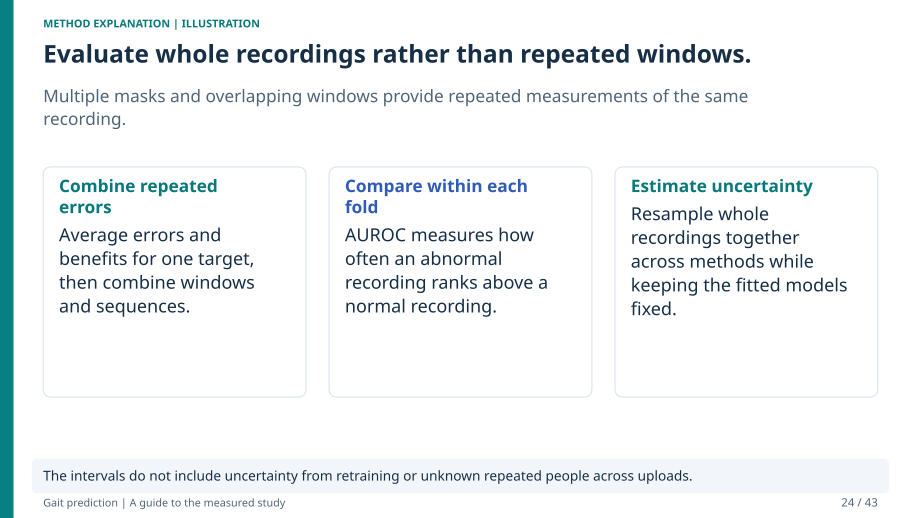
The intervals do not include uncertainty from retraining or unknown repeated people across uploads.
Speaker notes for slide 24
Purpose
A recording can generate many overlapping windows and masked predictions, but those predictions do not create new independent people. This slide explains the aggregation and uncertainty calculations used to evaluate the anomaly scores.
Explanation
We first average prediction errors and benefits across repeated masks of the same physical target, then aggregate targets, windows and sequences into recording-level measurements while retaining the declared joint weights. AUROC then measures how often an abnormal recording receives a higher anomaly score than a normal recording. We calculate it within each fold and weight folds by their numbers of normal-abnormal pairs.
Reading the visual
Follow the measurement hierarchy toward a single recording score before reading the ranking step. This avoids giving a long or heavily sampled video extra influence merely because it supplies more windows. The resampling step keeps every method's score for a recording together.
Evidence and limits
Detection intervals use 1,000 paired bootstrap resamples within fold and label group, with the original fold weights fixed. They condition on the saved fitted models and selected analysis. They exclude retraining variation and cannot resolve unknown repeated people across uploads. Average precision is also reported with each fold's abnormal fraction, because that fraction affects its interpretation.
Transition
With the recording-level evaluation defined, the next slide compares Movement M and Combined S on the main four-condition group and the broader collection of abnormal folders.
Sources: Executed protocol · Verified study results
Plain-language guide to M, R and S
Movement score M
This score summarizes what the movement looks like. In the video study, its 16 measurements describe knee posture, how far the ankles move, changes in movement speed, trunk tilt, and differences between the two sides. The laboratory study instead uses 12 measurements of joint-angle levels and ranges. M compares the observed pattern with the normal fitting group. A larger score means a more unusual combination of these visible measurements.
Cross-leg score R
First, compare two predictions of the same hidden movement. Both retain the initial own-leg estimate. One adds a correction using only that leg, while the other adds a correction that can also see the opposite leg. Subtract the both-leg squared error from the own-leg squared error to measure the added benefit. Next, compare the left-leg and right-leg benefits with separate normal references. The same reserved reference group supplies both sides. R is larger when those benefits are unusually high or unusually low.
What normal-reference scaling means
For each leg, the study subtracts the normal reference mean benefit from the observed benefit. It then divides by an estimated normal standard deviation, which measures the spread of reference benefits, and squares the result. R averages these two squared departures. This is the meaning of calibration here. It measures departure from the reference; it does not produce a probability of disease. Each video fold has five separate normal reference recordings. Each laboratory fold has 20 separate healthy reference participants.
Combined score S
S adds the movement score M and the cross-leg score R, then divides by two. Thus it gives the two numerical scores fixed equal weight. Equal weights do not guarantee that the two scores have equally reliable scales or equal influence on ranking. The experiment tests whether this particular average improves detection.
Prediction benefit and detection accuracy
Prediction benefit means a reduction in error for a hidden movement. Detection accuracy means better separation of normal-labeled and abnormal-labeled recordings. A useful prediction benefit does not automatically improve detection. AUROC summarizes how often an abnormal recording receives a higher score than a normal recording; 0.5 is chance ranking and 1.0 is perfect ranking on the evaluated data. Here, ranking is measured within each held-out test group, then averaged with fixed weights.
Read the slide as text
METHOD EXPLANATION | ILLUSTRATION
Evaluate whole recordings rather than repeated windows.
Multiple masks and overlapping windows provide repeated measurements of the same
recording.
The intervals do not include uncertainty from retraining or unknown repeated people across uploads.
Gait prediction | A guide to the measured study
24 / 43
Combine repeated
errors
Average errors and
benefits for one target,
then combine windows
and sequences.
Compare within each
fold
AUROC measures how
often an abnormal
recording ranks above a
normal recording.
Estimate uncertainty
Resample whole
recordings together
across methods while
keeping the fitted models
fixed.
25. Movement alone ranks the video labels more accurately.
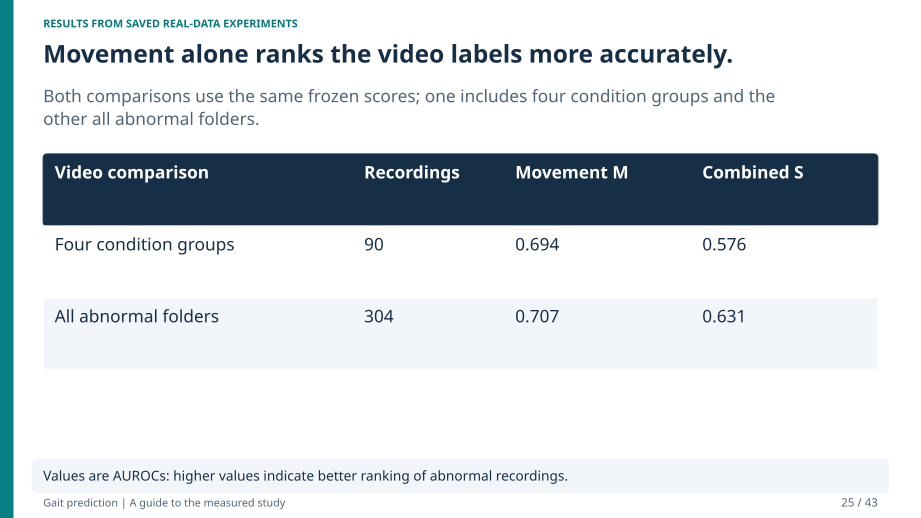
Values are AUROCs: higher values indicate better ranking of abnormal recordings.
Speaker notes for slide 25
Purpose
This slide reports whether adding Cross-leg R to Movement M improves the ranking of abnormal recordings. It keeps the detection question separate from the positive completion results we have already examined.
Explanation
In the main group of 90 recordings, Movement M reaches AUROC 0.694 and Combined S reaches 0.576. This group contains normal recordings and the four requested condition families. Across all 304 retained recordings, treating every non-normal folder as abnormal, the corresponding values are 0.707 and 0.631. Higher AUROC means more accurate ranking under these dataset labels.
Reading the visual
Compare the two score columns within each row. Both rows show the same direction: the fixed average performs less well than movement alone. The broader row reuses the main group's recordings, so it is a wider population analysis rather than a second independent dataset.
Evidence and limits
Both comparisons use the same frozen source scores, and prediction-based scores use Scattered hiding (U bank). The study remains exploratory, and folder labels are not independently verified diagnoses. These findings concern the specified cross-leg score and fixed combination. They do not imply that opposite-leg information is useless for completion or for every possible detector.
Transition
The next slide examines paired uncertainty around these differences, so we can distinguish a measured direction from a small change that the current data cannot resolve.
Sources: Executed protocol · Verified study results
Plain-language guide to M, R and S
Movement score M
This score summarizes what the movement looks like. In the video study, its 16 measurements describe knee posture, how far the ankles move, changes in movement speed, trunk tilt, and differences between the two sides. The laboratory study instead uses 12 measurements of joint-angle levels and ranges. M compares the observed pattern with the normal fitting group. A larger score means a more unusual combination of these visible measurements.
Cross-leg score R
First, compare two predictions of the same hidden movement. Both retain the initial own-leg estimate. One adds a correction using only that leg, while the other adds a correction that can also see the opposite leg. Subtract the both-leg squared error from the own-leg squared error to measure the added benefit. Next, compare the left-leg and right-leg benefits with separate normal references. The same reserved reference group supplies both sides. R is larger when those benefits are unusually high or unusually low.
What normal-reference scaling means
For each leg, the study subtracts the normal reference mean benefit from the observed benefit. It then divides by an estimated normal standard deviation, which measures the spread of reference benefits, and squares the result. R averages these two squared departures. This is the meaning of calibration here. It measures departure from the reference; it does not produce a probability of disease. Each video fold has five separate normal reference recordings. Each laboratory fold has 20 separate healthy reference participants.
Combined score S
S adds the movement score M and the cross-leg score R, then divides by two. Thus it gives the two numerical scores fixed equal weight. Equal weights do not guarantee that the two scores have equally reliable scales or equal influence on ranking. The experiment tests whether this particular average improves detection.
Prediction benefit and detection accuracy
Prediction benefit means a reduction in error for a hidden movement. Detection accuracy means better separation of normal-labeled and abnormal-labeled recordings. A useful prediction benefit does not automatically improve detection. AUROC summarizes how often an abnormal recording receives a higher score than a normal recording; 0.5 is chance ranking and 1.0 is perfect ranking on the evaluated data. Here, ranking is measured within each held-out test group, then averaged with fixed weights.
Read the slide as text
RESULTS FROM SAVED REAL-DATA EXPERIMENTS
Movement alone ranks the video labels more accurately.
Both comparisons use the same frozen scores; one includes four condition groups and the
other all abnormal folders.
Values are AUROCs: higher values indicate better ranking of abnormal recordings.
Gait prediction | A guide to the measured study
25 / 43
Video comparison
Recordings
Movement M
Combined S
Four condition groups
90
0.694
0.576
All abnormal folders
304
0.707
0.631
26. Use paired intervals to judge the size of a difference.
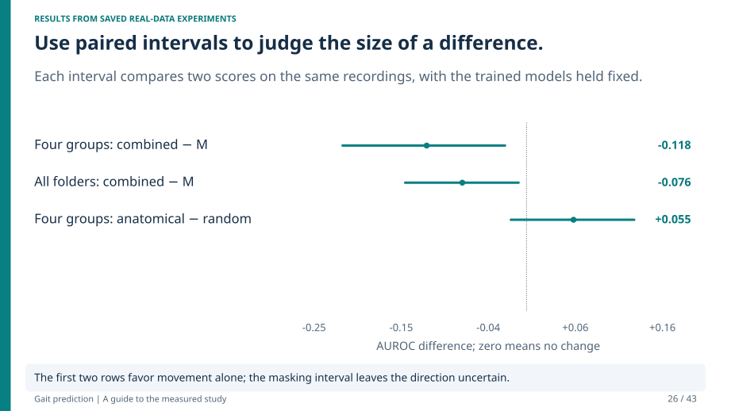
The first two rows favor movement alone; the masking interval leaves the direction uncertain.
Speaker notes for slide 26
Purpose
Point estimates summarize the saved test results, while paired intervals show how much those differences vary when recordings are resampled. This slide puts the key score comparisons on a common difference scale.
Explanation
For Combined S minus Movement M, a negative value favors movement alone. The main GAVD difference is -0.118, with a conditional 95% interval from -0.217 to -0.025. The broad difference is -0.076, with interval [-0.143, -0.009]. The third row compares Anatomical with Random training for the same combined score on the main group.
Reading the visual
Use the vertical zero line to interpret each bar. The two combination comparisons lie below zero. The Anatomical A minus Random U detection comparison crosses zero, even though its point estimate is positive. That uncertainty is compatible with several directions of effect; it does not establish equivalence.
Evidence and limits
The detection intervals use 1,000 paired resamples of recordings while keeping fitted models and original fold weights fixed. Multiple comparisons remain exploratory and unadjusted. The two GAVD rows share recordings, so the plot should not be read as independent confirmations.
Transition
We next examine all three training-mask detection results together, preserving the same scattered-hiding evaluation task and the distinction between a higher point estimate and an established advantage.
Sources: Executed protocol · Verified study results
Plain-language guide to M, R and S
Movement score M
This score summarizes what the movement looks like. In the video study, its 16 measurements describe knee posture, how far the ankles move, changes in movement speed, trunk tilt, and differences between the two sides. The laboratory study instead uses 12 measurements of joint-angle levels and ranges. M compares the observed pattern with the normal fitting group. A larger score means a more unusual combination of these visible measurements.
Cross-leg score R
First, compare two predictions of the same hidden movement. Both retain the initial own-leg estimate. One adds a correction using only that leg, while the other adds a correction that can also see the opposite leg. Subtract the both-leg squared error from the own-leg squared error to measure the added benefit. Next, compare the left-leg and right-leg benefits with separate normal references. The same reserved reference group supplies both sides. R is larger when those benefits are unusually high or unusually low.
What normal-reference scaling means
For each leg, the study subtracts the normal reference mean benefit from the observed benefit. It then divides by an estimated normal standard deviation, which measures the spread of reference benefits, and squares the result. R averages these two squared departures. This is the meaning of calibration here. It measures departure from the reference; it does not produce a probability of disease. Each video fold has five separate normal reference recordings. Each laboratory fold has 20 separate healthy reference participants.
Combined score S
S adds the movement score M and the cross-leg score R, then divides by two. Thus it gives the two numerical scores fixed equal weight. Equal weights do not guarantee that the two scores have equally reliable scales or equal influence on ranking. The experiment tests whether this particular average improves detection.
Prediction benefit and detection accuracy
Prediction benefit means a reduction in error for a hidden movement. Detection accuracy means better separation of normal-labeled and abnormal-labeled recordings. A useful prediction benefit does not automatically improve detection. AUROC summarizes how often an abnormal recording receives a higher score than a normal recording; 0.5 is chance ranking and 1.0 is perfect ranking on the evaluated data. Here, ranking is measured within each held-out test group, then averaged with fixed weights.
Read the slide as text
RESULTS FROM SAVED REAL-DATA EXPERIMENTS
Use paired intervals to judge the size of a difference.
Each interval compares two scores on the same recordings, with the trained models held fixed.
The first two rows favor movement alone; the masking interval leaves the direction uncertain.
Gait prediction | A guide to the measured study
26 / 43
Four groups: combined − M
-0.118
All folders: combined − M
-0.076
Four groups: anatomical − random
+0.055
-0.25
-0.15
-0.04
+0.06
+0.16
AUROC difference; zero means no change
27. The scattered test does not establish a better training mask.
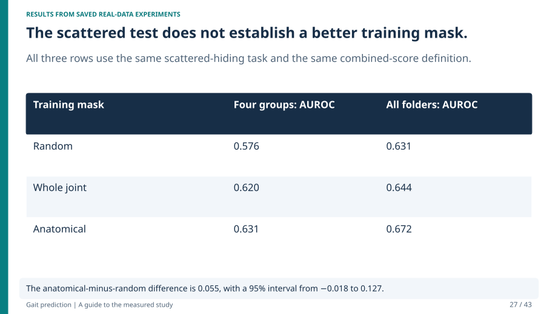
The anatomical-minus-random difference is 0.055, with a 95% interval from −0.018 to 0.127.
Speaker notes for slide 27
Purpose
This slide shows the complete training-mask comparison for anomaly detection under Scattered hiding (U bank). Keeping all three policies visible prevents the largest point estimate from becoming a stronger conclusion than the uncertainty supports.
Explanation
For the main four-condition group, Combined S reaches AUROC 0.576 with Random U, 0.620 with Whole joint J and 0.631 with Anatomical A. The broad results are 0.631, 0.644 and 0.672. Every row uses the same evaluation masks, recording population and score formula; the correction training policy is the factor being compared.
Reading the visual
Read down one population column at a time. Anatomical A has the largest displayed point estimate, but the table alone does not show whether its advantage is established. Relate it to the paired interval from the preceding slide rather than interpreting row order as a ranking of proven methods.
Evidence and limits
The main Anatomical A minus Random U difference is 0.055, with conditional interval [-0.018, 0.127]. The other pairwise masking intervals also cross zero. These detection comparisons therefore do not establish a masking advantage, even though the separate grouped completion task shows a clear anatomical-training benefit.
Transition
The next slide changes the evaluation question to Grouped hiding E_leg and explains why its detection values must be interpreted as a separate diagnostic comparison.
Sources: Executed protocol · Verified study results
Plain-language guide to M, R and S
Movement score M
This score summarizes what the movement looks like. In the video study, its 16 measurements describe knee posture, how far the ankles move, changes in movement speed, trunk tilt, and differences between the two sides. The laboratory study instead uses 12 measurements of joint-angle levels and ranges. M compares the observed pattern with the normal fitting group. A larger score means a more unusual combination of these visible measurements.
Cross-leg score R
First, compare two predictions of the same hidden movement. Both retain the initial own-leg estimate. One adds a correction using only that leg, while the other adds a correction that can also see the opposite leg. Subtract the both-leg squared error from the own-leg squared error to measure the added benefit. Next, compare the left-leg and right-leg benefits with separate normal references. The same reserved reference group supplies both sides. R is larger when those benefits are unusually high or unusually low.
What normal-reference scaling means
For each leg, the study subtracts the normal reference mean benefit from the observed benefit. It then divides by an estimated normal standard deviation, which measures the spread of reference benefits, and squares the result. R averages these two squared departures. This is the meaning of calibration here. It measures departure from the reference; it does not produce a probability of disease. Each video fold has five separate normal reference recordings. Each laboratory fold has 20 separate healthy reference participants.
Combined score S
S adds the movement score M and the cross-leg score R, then divides by two. Thus it gives the two numerical scores fixed equal weight. Equal weights do not guarantee that the two scores have equally reliable scales or equal influence on ranking. The experiment tests whether this particular average improves detection.
Prediction benefit and detection accuracy
Prediction benefit means a reduction in error for a hidden movement. Detection accuracy means better separation of normal-labeled and abnormal-labeled recordings. A useful prediction benefit does not automatically improve detection. AUROC summarizes how often an abnormal recording receives a higher score than a normal recording; 0.5 is chance ranking and 1.0 is perfect ranking on the evaluated data. Here, ranking is measured within each held-out test group, then averaged with fixed weights.
Read the slide as text
RESULTS FROM SAVED REAL-DATA EXPERIMENTS
The scattered test does not establish a better training mask.
All three rows use the same scattered-hiding task and the same combined-score definition.
The anatomical-minus-random difference is 0.055, with a 95% interval from −0.018 to 0.127.
Gait prediction | A guide to the measured study
27 / 43
Training mask
Four groups: AUROC
All folders: AUROC
Random
0.576
0.631
Whole joint
0.620
0.644
Anatomical
0.631
0.672
28. Grouped hiding asks a separate anomaly question.
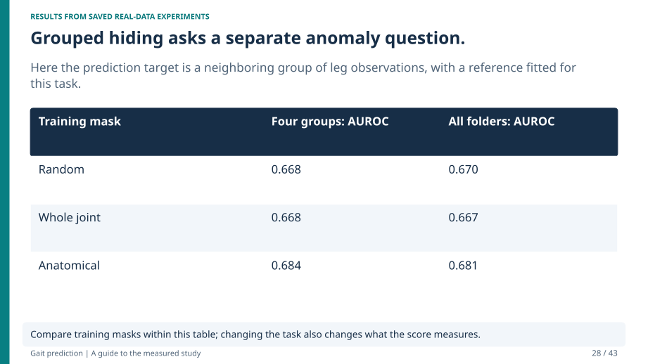
Compare training masks within this table; changing the task also changes what the score measures.
Speaker notes for slide 28
Purpose
Grouped hiding E_leg tests what happens when neighboring lower-leg observations disappear together. This slide carries that distinct observation task through to anomaly scoring without treating it as interchangeable with scattered hiding.
Explanation
The main-group Combined S AUROCs are 0.668 for Random U, 0.668 for Whole joint J and 0.684 for Anatomical A. These scores are calculated from grouped targets. Each policy uses a grouped-task normal reference estimated from the same reserved recording identities, because the typical prediction benefit changes when the available context changes.
Reading the visual
Compare rows within this table to assess training policies on the grouped task. Do not subtract a row from the scattered-hiding table and call the result a pure training improvement. Changing banks changes hidden targets, permitted context and the reference distribution used by Cross-leg R.
Evidence and limits
All 304 retained recordings support this diagnostic, including the 90-recording main group. Positive normal completion benefits therefore coexist with these separate detection results. The anatomical point estimate remains below Movement M's 0.694 in the main group, and the grouped task does not establish an anomaly-detection advantage over movement alone.
Transition
We now broaden the comparison to inexpensive movement and prediction-error baselines, which help determine whether a more elaborate relational measurement adds useful detection information.
Sources: Executed protocol · Verified study results
Plain-language guide to M, R and S
Movement score M
This score summarizes what the movement looks like. In the video study, its 16 measurements describe knee posture, how far the ankles move, changes in movement speed, trunk tilt, and differences between the two sides. The laboratory study instead uses 12 measurements of joint-angle levels and ranges. M compares the observed pattern with the normal fitting group. A larger score means a more unusual combination of these visible measurements.
Cross-leg score R
First, compare two predictions of the same hidden movement. Both retain the initial own-leg estimate. One adds a correction using only that leg, while the other adds a correction that can also see the opposite leg. Subtract the both-leg squared error from the own-leg squared error to measure the added benefit. Next, compare the left-leg and right-leg benefits with separate normal references. The same reserved reference group supplies both sides. R is larger when those benefits are unusually high or unusually low.
What normal-reference scaling means
For each leg, the study subtracts the normal reference mean benefit from the observed benefit. It then divides by an estimated normal standard deviation, which measures the spread of reference benefits, and squares the result. R averages these two squared departures. This is the meaning of calibration here. It measures departure from the reference; it does not produce a probability of disease. Each video fold has five separate normal reference recordings. Each laboratory fold has 20 separate healthy reference participants.
Combined score S
S adds the movement score M and the cross-leg score R, then divides by two. Thus it gives the two numerical scores fixed equal weight. Equal weights do not guarantee that the two scores have equally reliable scales or equal influence on ranking. The experiment tests whether this particular average improves detection.
Prediction benefit and detection accuracy
Prediction benefit means a reduction in error for a hidden movement. Detection accuracy means better separation of normal-labeled and abnormal-labeled recordings. A useful prediction benefit does not automatically improve detection. AUROC summarizes how often an abnormal recording receives a higher score than a normal recording; 0.5 is chance ranking and 1.0 is perfect ranking on the evaluated data. Here, ranking is measured within each held-out test group, then averaged with fixed weights.
Read the slide as text
RESULTS FROM SAVED REAL-DATA EXPERIMENTS
Grouped hiding asks a separate anomaly question.
Here the prediction target is a neighboring group of leg observations, with a reference fitted for
this task.
Compare training masks within this table; changing the task also changes what the score measures.
Gait prediction | A guide to the measured study
28 / 43
Training mask
Four groups: AUROC
All folders: AUROC
Random
0.668
0.670
Whole joint
0.668
0.667
Anatomical
0.684
0.681
29. Simple comparisons help explain the anomaly scores.
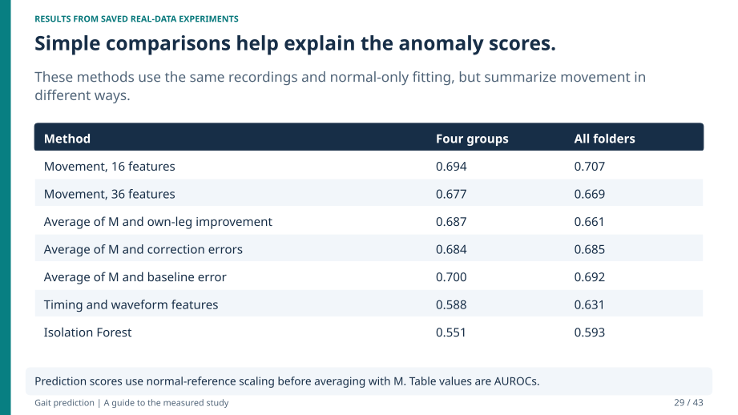
Prediction scores use normal-reference scaling before averaging with M. Table values are AUROCs.
Speaker notes for slide 29
Purpose
A new anomaly measurement needs comparison with practical alternatives that use the same test recordings. This slide places the cross-leg combination beside simpler movement, waveform and prediction-error approaches.
Explanation
Movement M reaches main-group AUROC 0.694, while the movement-plus-baseline-error score reaches 0.700. That score averages M with a normal-referenced distance derived from the Own-leg baseline f's error; it does not simply add raw error. Richer movement features reach 0.677, timing and waveform features reach 0.588, and Isolation Forest reaches 0.551. Combined S with Random U reaches 0.576.
Reading the visual
Read each row as another way to rank the same recordings. Keep the movement-plus-baseline-error score visible: Movement M is a strong comparator, but it is not the largest point estimate in every comparison. The small difference between 0.700 and 0.694 should not be described as a demonstrated statistical gain.
Evidence and limits
These anomaly models fit or estimate references using normal recordings only. The complete results also retain own-leg-improvement, correction-error and recording-condition controls. The timing descriptors summarize waveforms; they are not a validated physiological phase measure. These distinctions matter when deciding what a score actually measures.
Transition
The next slide examines the adapted published pose model, explaining both its measured result and the implementation differences that limit comparisons with the original publication.
Sources: Executed protocol · Verified study results
Plain-language guide to M, R and S
Movement score M
This score summarizes what the movement looks like. In the video study, its 16 measurements describe knee posture, how far the ankles move, changes in movement speed, trunk tilt, and differences between the two sides. The laboratory study instead uses 12 measurements of joint-angle levels and ranges. M compares the observed pattern with the normal fitting group. A larger score means a more unusual combination of these visible measurements.
Cross-leg score R
First, compare two predictions of the same hidden movement. Both retain the initial own-leg estimate. One adds a correction using only that leg, while the other adds a correction that can also see the opposite leg. Subtract the both-leg squared error from the own-leg squared error to measure the added benefit. Next, compare the left-leg and right-leg benefits with separate normal references. The same reserved reference group supplies both sides. R is larger when those benefits are unusually high or unusually low.
What normal-reference scaling means
For each leg, the study subtracts the normal reference mean benefit from the observed benefit. It then divides by an estimated normal standard deviation, which measures the spread of reference benefits, and squares the result. R averages these two squared departures. This is the meaning of calibration here. It measures departure from the reference; it does not produce a probability of disease. Each video fold has five separate normal reference recordings. Each laboratory fold has 20 separate healthy reference participants.
Combined score S
S adds the movement score M and the cross-leg score R, then divides by two. Thus it gives the two numerical scores fixed equal weight. Equal weights do not guarantee that the two scores have equally reliable scales or equal influence on ranking. The experiment tests whether this particular average improves detection.
Prediction benefit and detection accuracy
Prediction benefit means a reduction in error for a hidden movement. Detection accuracy means better separation of normal-labeled and abnormal-labeled recordings. A useful prediction benefit does not automatically improve detection. AUROC summarizes how often an abnormal recording receives a higher score than a normal recording; 0.5 is chance ranking and 1.0 is perfect ranking on the evaluated data. Here, ranking is measured within each held-out test group, then averaged with fixed weights.
Read the slide as text
RESULTS FROM SAVED REAL-DATA EXPERIMENTS
Simple comparisons help explain the anomaly scores.
These methods use the same recordings and normal-only fitting, but summarize movement in
different ways.
Prediction scores use normal-reference scaling before averaging with M. Table values are AUROCs.
Gait prediction | A guide to the measured study
29 / 43
Method
Four groups
All folders
Movement, 16 features
0.694
0.707
Movement, 36 features
0.677
0.669
Average of M and own-leg improvement
0.687
0.661
Average of M and correction errors
0.684
0.685
Average of M and baseline error
0.700
0.692
Timing and waveform features
0.588
0.631
Isolation Forest
0.551
0.593
30. A published pose model needs a missing-data adaptation.
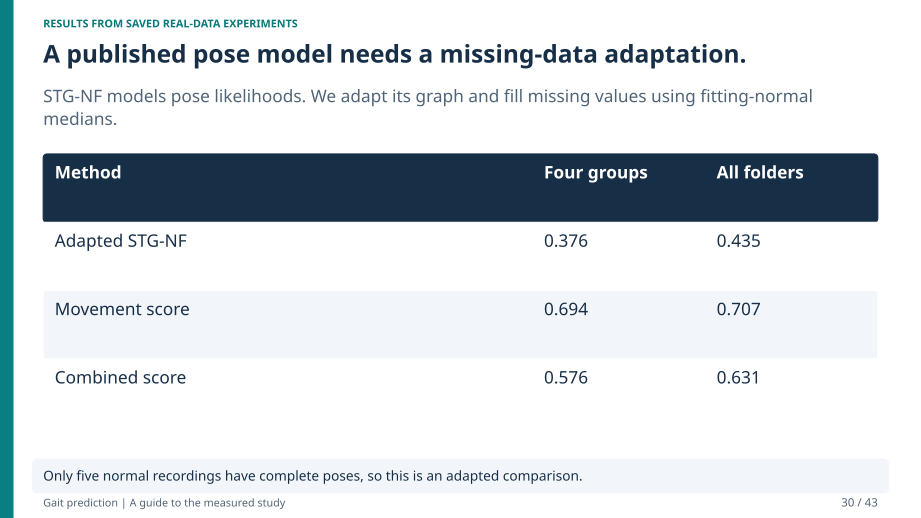
Only five normal recordings have complete poses, so this is an adapted comparison.
Speaker notes for slide 30
Purpose
Including a published pose-based anomaly method adds a useful reference, provided we explain exactly what was run. This slide reports the STG-NF adaptation used with the available GAVD skeletons and missing measurements.
Explanation
STG-NF learns a distribution of pose sequences and can score observations that depart from normal training data. Here, the authors' implementation is adapted to the 16-joint graph, and missing values are replaced with medians estimated from fitting-normal recordings. Each fold uses 128 training updates. The comparison preserves the same eligible recordings as the other methods.
Reading the visual
Compare the adapted STG-NF row with Movement M and Combined S in each population column. Its AUROCs are 0.376 for the main group and 0.435 for the broad group. These values describe this specific fitted adaptation and training budget, rather than the best performance the published method could achieve.
Evidence and limits
All four folds complete, and the upstream revision and adaptations are recorded. Only five normal recordings have fully complete poses, so an unmodified complete-case analysis cannot use the same split. The result supports a transparent implementation comparison, but not a state-of-the-art claim or a general judgment about normalizing-flow methods.
Transition
The next slide turns to a separate supervised question: whether learned JEPA features help distinguish the five gait-label groups when condition labels are available for classifier training.
Sources: Executed protocol · Verified study results
Plain-language guide to M, R and S
Movement score M
This score summarizes what the movement looks like. In the video study, its 16 measurements describe knee posture, how far the ankles move, changes in movement speed, trunk tilt, and differences between the two sides. The laboratory study instead uses 12 measurements of joint-angle levels and ranges. M compares the observed pattern with the normal fitting group. A larger score means a more unusual combination of these visible measurements.
Cross-leg score R
First, compare two predictions of the same hidden movement. Both retain the initial own-leg estimate. One adds a correction using only that leg, while the other adds a correction that can also see the opposite leg. Subtract the both-leg squared error from the own-leg squared error to measure the added benefit. Next, compare the left-leg and right-leg benefits with separate normal references. The same reserved reference group supplies both sides. R is larger when those benefits are unusually high or unusually low.
What normal-reference scaling means
For each leg, the study subtracts the normal reference mean benefit from the observed benefit. It then divides by an estimated normal standard deviation, which measures the spread of reference benefits, and squares the result. R averages these two squared departures. This is the meaning of calibration here. It measures departure from the reference; it does not produce a probability of disease. Each video fold has five separate normal reference recordings. Each laboratory fold has 20 separate healthy reference participants.
Combined score S
S adds the movement score M and the cross-leg score R, then divides by two. Thus it gives the two numerical scores fixed equal weight. Equal weights do not guarantee that the two scores have equally reliable scales or equal influence on ranking. The experiment tests whether this particular average improves detection.
Prediction benefit and detection accuracy
Prediction benefit means a reduction in error for a hidden movement. Detection accuracy means better separation of normal-labeled and abnormal-labeled recordings. A useful prediction benefit does not automatically improve detection. AUROC summarizes how often an abnormal recording receives a higher score than a normal recording; 0.5 is chance ranking and 1.0 is perfect ranking on the evaluated data. Here, ranking is measured within each held-out test group, then averaged with fixed weights.
Read the slide as text
RESULTS FROM SAVED REAL-DATA EXPERIMENTS
A published pose model needs a missing-data adaptation.
STG-NF models pose likelihoods. We adapt its graph and fill missing values using fitting-normal
medians.
Only five normal recordings have complete poses, so this is an adapted comparison.
Gait prediction | A guide to the measured study
30 / 43
Method
Four groups
All folders
Adapted STG-NF
0.376
0.435
Movement score
0.694
0.707
Combined score
0.576
0.631
31. Condition classification uses labels in a separate experiment.
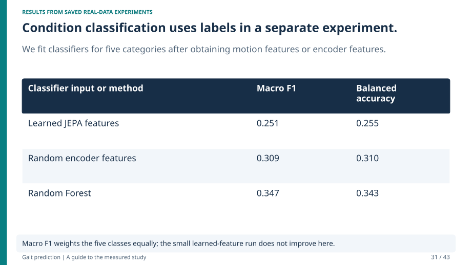
Macro F1 weights the five classes equally; the small learned-feature run does not improve here.
Speaker notes for slide 31
Purpose
This slide separates identifying a named gait category from detecting an unusual recording. A five-class classifier must choose normal, Parkinsons, stroke, cerebral palsy or myopathic gait, and it is allowed to learn from category labels during classifier training.
Explanation
JEPA learns a representation by predicting another encoder's representation of hidden observations. Here, its encoder trains only on fitting-normal recordings, with a slowly updated teacher. VICReg discourages constant or redundant representations. A supervised classifier then uses those features, while a randomly initialized encoder provides a comparison that has not learned those representations.
Reading the visual
Read the table as three classifiers evaluated on the same recording splits. Macro F1 gives each of the five categories equal weight, so the largest category cannot dominate the reported average. The numbers summarize four test folds rather than clinical certainty for an individual video.
Evidence and limits
The saved protocol uses 512 JEPA updates per fold and 89 recordings with unambiguous five-class labels. Mean macro F1 is 0.347 for Random Forest, 0.251 for learned JEPA features and 0.309 for random-encoder features. This bounded experiment does not demonstrate an advantage from the learned encoder.
Transition
We now return to the prediction model and ask a more specific question: how does its error change when the other leg's observations come from a slightly different time?
Sources: Executed protocol · Verified study results
Read the slide as text
RESULTS FROM SAVED REAL-DATA EXPERIMENTS
Condition classification uses labels in a separate experiment.
We fit classifiers for five categories after obtaining motion features or encoder features.
Macro F1 weights the five classes equally; the small learned-feature run does not improve here.
Gait prediction | A guide to the measured study
31 / 43
Classifier input or method
Macro F1
Balanced
accuracy
Learned JEPA features
0.251
0.255
Random encoder features
0.309
0.310
Random Forest
0.347
0.343
32. Shift the other leg while keeping the hidden answer fixed.
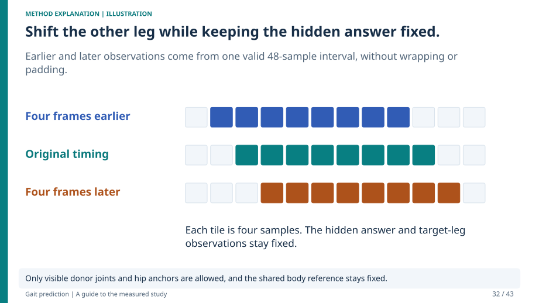
Only visible donor joints and hip anchors are allowed, and the shared body reference stays fixed.
Speaker notes for slide 32
Purpose
The timing experiment changes the other leg's observations while keeping the answer unchanged. This helps distinguish a response to altered context from a comparison in which both the input and the target have moved.
Explanation
A continuous 48-frame interval supplies a central 32-frame prediction window and observations four frames earlier or later. At 15 samples per second, that offset is about 0.27 seconds. The target leg, hidden answer and body scale remain fixed, and samples never wrap around a sequence boundary.
Reading the visual
Follow the highlighted middle window before examining the earlier and later windows. Each donor knee, ankle, heel or toe position is expressed relative to its visible donor hip, then attached to the original visible hip on that side. This preserves the declared body reference while changing the supplied lower-leg movement.
Evidence and limits
The protocol requires both the donor hip and the attachment hip to be visible and valid. It uses only observations available in both versions, so a hidden point cannot leak back through the edit. The construction changes timing and instantaneous geometry together; it does not isolate a physiological phase or a neurological cause.
Transition
Before interpreting the response to this edit, we must check whether the model still predicts adequately from the smaller set of observations that the comparison permits.
Sources: Executed protocol · Verified study results
Read the slide as text
METHOD EXPLANATION | ILLUSTRATION
Shift the other leg while keeping the hidden answer fixed.
Earlier and later observations come from one valid 48-sample interval, without wrapping or
padding.
Only visible donor joints and hip anchors are allowed, and the shared body reference stays fixed.
Gait prediction | A guide to the measured study
32 / 43
Four frames earlier
Original timing
Four frames later
Each tile is four samples. The hidden answer and target-leg
observations stay fixed.
33. The timing comparison leaves very little usable context.
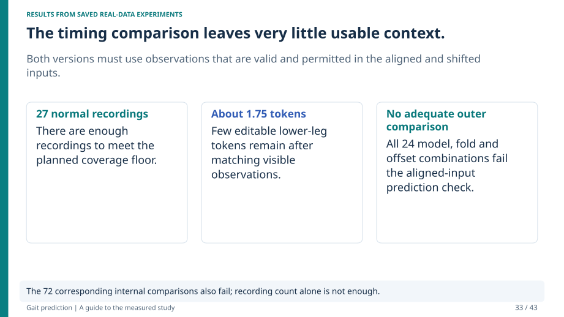
The 72 corresponding internal comparisons also fail; recording count alone is not enough.
Speaker notes for slide 33
Purpose
This slide checks whether the unshifted prediction is useful before any timing change is interpreted. A model's response to an edit is difficult to explain when the model already predicts poorly from the observations available to that edit.
Explanation
Requiring an observation to remain usable in both the original and shifted versions removes substantial context. On average, only about 1.75 lower-leg tokens remain editable for each target. A token contains one joint across four samples, so this is a sparse input even when the recording itself contains many frames.
Reading the visual
Compare the Both-leg correction f+g with the Own-leg correction f+h using the same unshifted inputs. The negative benefit means that adding the other leg produces higher error here. This is a check on the timing experiment's restricted inputs, rather than a contradiction of completion results measured with richer observations.
Evidence and limits
The saved timing records contain 27 held-out normal recordings. The prediction check fails in all 24 outer combinations of four folds, three training masks and two timing offsets, and in all 72 corresponding internal comparisons. Models are not refitted after observing these results.
Transition
We can still report how the fixed model responds to earlier and later observations, provided that this weak unshifted prediction remains part of the interpretation.
Sources: Executed protocol · Verified study results
Read the slide as text
RESULTS FROM SAVED REAL-DATA EXPERIMENTS
The timing comparison leaves very little usable context.
Both versions must use observations that are valid and permitted in the aligned and shifted
inputs.
The 72 corresponding internal comparisons also fail; recording count alone is not enough.
Gait prediction | A guide to the measured study
33 / 43
27 normal recordings
There are enough
recordings to meet the
planned coverage floor.
About 1.75 tokens
Few editable lower-leg
tokens remain after
matching visible
observations.
No adequate outer
comparison
All 24 model, fold and
offset combinations fail
the aligned-input
prediction check.
34. A timing response needs an adequate starting prediction.
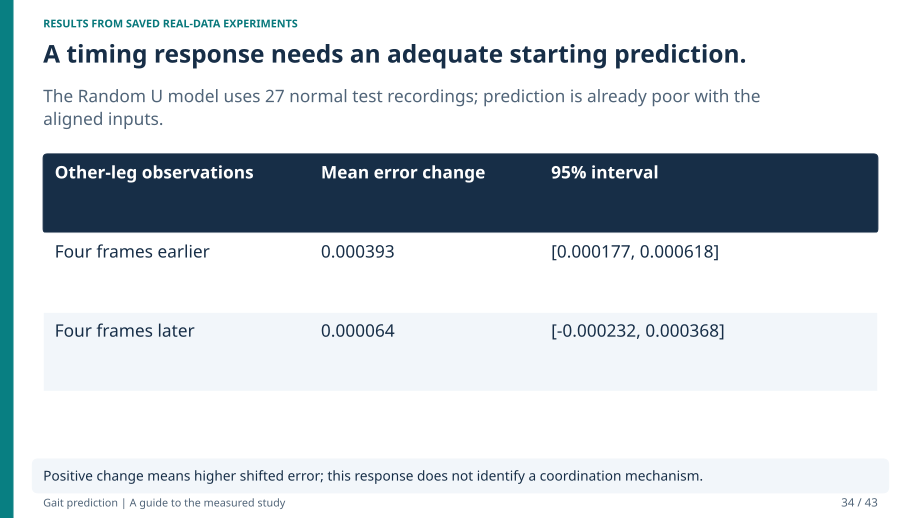
Positive change means higher shifted error; this response does not identify a coordination mechanism.
Speaker notes for slide 34
Purpose
The timing response is a measured property of this predictor under a specified input edit. The purpose of this slide is to show that response and its uncertainty without treating it as a measurement of a person's neurological coordination.
Explanation
This table uses the Random U model on 27 held-out normal recordings. The reported quantity is shifted prediction error minus unshifted prediction error. A positive value means the edit makes prediction worse, while a negative value means it makes prediction better. Each comparison keeps the target and the own-leg observations fixed and uses the common valid context described on the preceding slides.
Reading the visual
Read the earlier and later offsets separately. Earlier samples raise mean error by 0.000393, with interval [0.000177, 0.000618]. Later samples change it by 0.000064, with interval [-0.000232, 0.000368]. These are squared normalized image-coordinate errors, and the later interval includes zero.
Evidence and limits
All 27 eligible normal recordings contribute at each offset. Zero edits reproduce the input, and changing the other leg leaves own-leg predictions unchanged. However, the unshifted prediction check fails. Noise controls are not matched to the timing edit's displacement, and the edit changes geometry as well as timing, limiting causal interpretation.
Transition
We next test the prediction idea in a separate laboratory dataset, where participant identities and synchronized joint-angle measurements provide a different basis for evaluation.
Sources: Executed protocol · Verified study results
Read the slide as text
RESULTS FROM SAVED REAL-DATA EXPERIMENTS
A timing response needs an adequate starting prediction.
The Random U model uses 27 normal test recordings; prediction is already poor with the
aligned inputs.
Positive change means higher shifted error; this response does not identify a coordination mechanism.
Gait prediction | A guide to the measured study
34 / 43
Other-leg observations
Mean error change
95% interval
Four frames earlier
0.000393
[0.000177, 0.000618]
Four frames later
0.000064
[-0.000232, 0.000368]
35. Test the prediction method on independent participants.
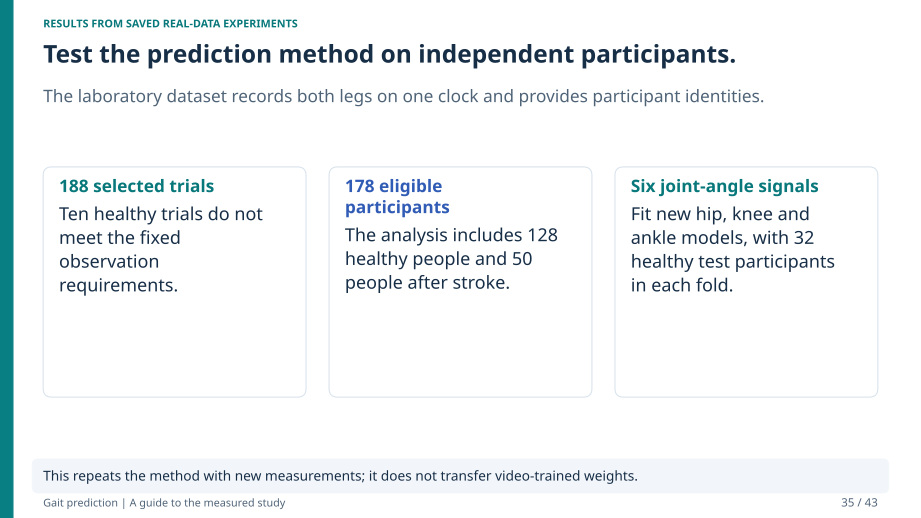
This repeats the method with new measurements; it does not transfer video-trained weights.
Speaker notes for slide 35
Purpose
The laboratory study asks whether the prediction comparison also works with identified participants and synchronized joint measurements. It provides evidence from a different measurement system while keeping the question about the benefit of the other leg recognizable.
Explanation
The public dataset from Van Criekinge and colleagues contains 138 healthy participants and 50 participants with stroke. One walking trial is selected for each person before outcomes are examined. Ten selected healthy trials do not supply eligible windows, leaving 178 participants: 128 healthy and 50 with stroke.
Reading the visual
Follow the six simultaneous signals for left and right hip, knee and ankle flexion. Their original shared clock is preserved, so each side is not independently stretched into a normalized gait cycle. The model uses 32-sample windows containing 48 four-sample tokens, with half hidden.
Evidence and limits
The linked Scientific Data article and external execution records identify the processed laboratory angles, selected trials and exclusions. Models are fitted separately on these signals, with healthy participants assigned to fitting, reference and test roles. These are neither GAVD coordinates nor transferred GAVD weights, and the evaluated condition is stroke.
Transition
With the participant groups and measurements defined, we can inspect whether the Both-leg correction improves hidden-angle prediction for healthy people in each test fold.
Sources: Laboratory control and stroke dataset · Independent participant study · Executed protocol
Read the slide as text
RESULTS FROM SAVED REAL-DATA EXPERIMENTS
Test the prediction method on independent participants.
The laboratory dataset records both legs on one clock and provides participant identities.
This repeats the method with new measurements; it does not transfer video-trained weights.
Gait prediction | A guide to the measured study
35 / 43
188 selected trials
Ten healthy trials do not
meet the fixed
observation
requirements.
178 eligible
participants
The analysis includes 128
healthy people and 50
people after stroke.
Six joint-angle signals
Fit new hip, knee and
ankle models, with 32
healthy test participants
in each fold.
36. The both-leg model improves laboratory prediction.
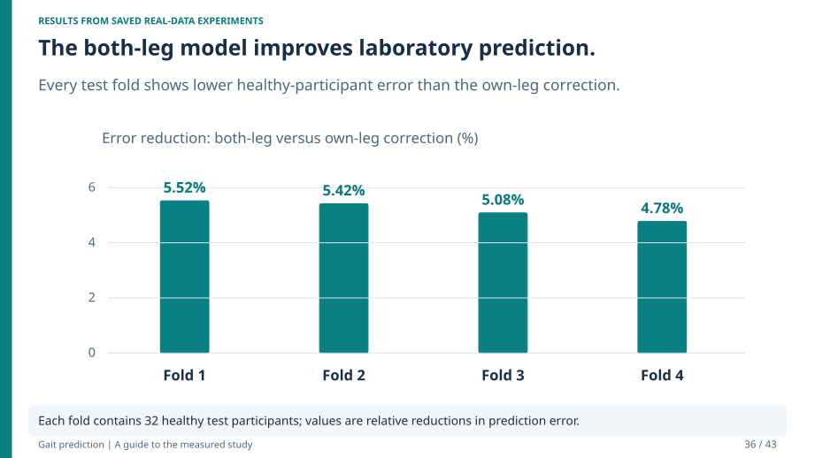
Each fold contains 32 healthy test participants; values are relative reductions in prediction error.
Speaker notes for slide 36
Purpose
This slide shows the laboratory prediction comparison before converting it into an anomaly score. The question is whether both legs help reconstruct deliberately hidden measurements for healthy participants who were excluded from the corresponding model fit.
Explanation
The Own-leg baseline f supplies the initial prediction. The Own-leg correction f+h adds features from the target leg, while the Both-leg correction f+g can also use the opposite leg. All methods predict the same hidden angle values. Their errors are measured in squared degrees, which should not be compared numerically with GAVD's image-coordinate errors.
Reading the visual
Each bar shows the reduction in mean error when the Both-leg correction replaces the Own-leg correction in one test fold. Every fold contains 32 held-out healthy participants. The accompanying saved comparison also reports mean errors of 309.838 for interpolation, 206.262 for the baseline, 201.038 for the own-leg correction and 190.584 for the both-leg correction, all in squared degrees.
Evidence and limits
The both-leg improvement relative to the own-leg correction ranges from 4.78% to 5.52% across folds. Both corrections have 72 feature columns, but their recorded numerical ranks are 44 and 62. The gain therefore concerns these fitted feature families and does not isolate information content from every difference in model flexibility.
Transition
The next slide summarizes the participant-by-participant comparison and explains what the uncertainty interval includes when the fitted models are kept fixed.
Sources: Executed protocol · Verified study results
Read the slide as text
RESULTS FROM SAVED REAL-DATA EXPERIMENTS
The both-leg model improves laboratory prediction.
Every test fold shows lower healthy-participant error than the own-leg correction.
Each fold contains 32 healthy test participants; values are relative reductions in prediction error.
Gait prediction | A guide to the measured study
36 / 43
Error reduction: both-leg versus own-leg correction (%)
0
2
4
6
5.52%
Fold 1
5.42%
Fold 2
5.08%
Fold 3
4.78%
Fold 4
37. The laboratory improvement appears across participants.
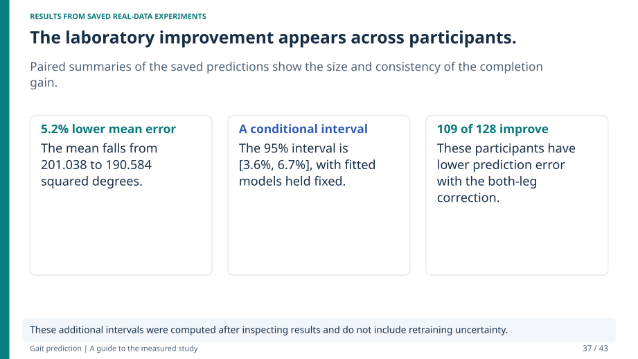
These additional intervals were computed after inspecting results and do not include retraining uncertainty.
Speaker notes for slide 37
Purpose
The aggregate laboratory gain becomes more informative when we compare the two predictions for the same person. This slide quantifies the mean reduction, the number of participants who improve and the uncertainty conditional on the completed fits.
Explanation
Across 128 held-out healthy participants, the Both-leg correction f+g reduces mean error by 5.2% relative to the Own-leg correction f+h. The conditional 95% interval is [3.6%, 6.7%]. In absolute units, the reduction is 10.454 squared degrees, with interval [7.154, 13.387]. Error decreases for 109 participants.
Reading the visual
Read the interval as uncertainty about this paired mean comparison, not as the range of individual benefits. All four fold means favor the both-leg model. The folds share some training participants across fits, so they are not four independent experimental replications.
Evidence and limits
The completion audit uses 1,000 paired participant resamples within the original folds, preserving both methods together and holding the fold weights fixed. These additional summaries were calculated after outcome inspection from saved predictions. They omit uncertainty from retraining, random seeds and analysis choices, and the unequal feature ranks remain a limitation.
Transition
The saved predictions show a completion gain in this fitted comparison. We next ask whether the resulting Cross-leg score helps distinguish stroke participants from healthy participants.
Sources: Post-outcome paired completion audit · Accessible manuscript and technical notes · Executed protocol · Independent participant study
Read the slide as text
RESULTS FROM SAVED REAL-DATA EXPERIMENTS
The laboratory improvement appears across participants.
Paired summaries of the saved predictions show the size and consistency of the completion
gain.
These additional intervals were computed after inspecting results and do not include retraining uncertainty.
Gait prediction | A guide to the measured study
37 / 43
5.2% lower mean error
The mean falls from
201.038 to 190.584
squared degrees.
A conditional interval
The 95% interval is
[3.6%, 6.7%], with fitted
models held fixed.
109 of 128 improve
These participants have
lower prediction error
with the both-leg
correction.
38. Laboratory anomaly ranking also favors movement alone.
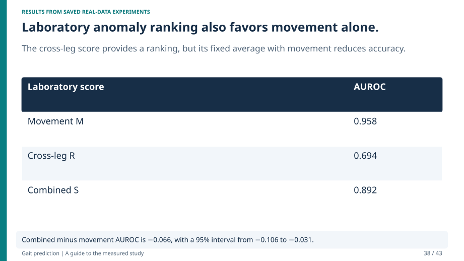
Combined minus movement AUROC is −0.066, with a 95% interval from −0.106 to −0.031.
Speaker notes for slide 38
Purpose
This slide tests a different claim from accurate completion. An anomaly score must rank unusual participants above typical participants, so a reduction in healthy prediction error does not automatically improve detection.
Explanation
Here, Movement M compares 12 measurements of joint-angle levels and ranges with the healthy fitting group. Cross-leg R compares the left and right prediction benefits with 20 separately reserved healthy reference participants per fold. A benefit that is unusually high or unusually low increases R. Combined S adds M and R and divides by two; its weights are not tuned on test labels.
Reading the visual
Compare all three scores on the same 178 eligible laboratory participants. Their AUROCs are 0.958 for Movement, 0.694 for Cross-leg and 0.892 for Combined. AUROC describes how often a stroke participant receives a higher anomaly score than a healthy participant when the comparison is made within a test fold.
Evidence and limits
The saved paired analysis gives a Combined-minus-Movement difference of -0.066, with conditional 95% interval [-0.106, -0.031]. Thus this particular fixed combination loses ranking performance despite the completion gain. It does not establish that every way of using cross-leg information must fail, or identify the cause of the loss.
Transition
Because the healthy and stroke groups have different demographic distributions, the next slide repeats the comparison in a fixed age- and sex-balanced subset.
Sources: Executed protocol · Verified study results
Plain-language guide to M, R and S
Movement score M
This score summarizes what the movement looks like. In the video study, its 16 measurements describe knee posture, how far the ankles move, changes in movement speed, trunk tilt, and differences between the two sides. The laboratory study instead uses 12 measurements of joint-angle levels and ranges. M compares the observed pattern with the normal fitting group. A larger score means a more unusual combination of these visible measurements.
Cross-leg score R
First, compare two predictions of the same hidden movement. Both retain the initial own-leg estimate. One adds a correction using only that leg, while the other adds a correction that can also see the opposite leg. Subtract the both-leg squared error from the own-leg squared error to measure the added benefit. Next, compare the left-leg and right-leg benefits with separate normal references. The same reserved reference group supplies both sides. R is larger when those benefits are unusually high or unusually low.
What normal-reference scaling means
For each leg, the study subtracts the normal reference mean benefit from the observed benefit. It then divides by an estimated normal standard deviation, which measures the spread of reference benefits, and squares the result. R averages these two squared departures. This is the meaning of calibration here. It measures departure from the reference; it does not produce a probability of disease. Each video fold has five separate normal reference recordings. Each laboratory fold has 20 separate healthy reference participants.
Combined score S
S adds the movement score M and the cross-leg score R, then divides by two. Thus it gives the two numerical scores fixed equal weight. Equal weights do not guarantee that the two scores have equally reliable scales or equal influence on ranking. The experiment tests whether this particular average improves detection.
Prediction benefit and detection accuracy
Prediction benefit means a reduction in error for a hidden movement. Detection accuracy means better separation of normal-labeled and abnormal-labeled recordings. A useful prediction benefit does not automatically improve detection. AUROC summarizes how often an abnormal recording receives a higher score than a normal recording; 0.5 is chance ranking and 1.0 is perfect ranking on the evaluated data. Here, ranking is measured within each held-out test group, then averaged with fixed weights.
Read the slide as text
RESULTS FROM SAVED REAL-DATA EXPERIMENTS
Laboratory anomaly ranking also favors movement alone.
The cross-leg score provides a ranking, but its fixed average with movement reduces accuracy.
Combined minus movement AUROC is −0.066, with a 95% interval from −0.106 to −0.031.
Gait prediction | A guide to the measured study
38 / 43
Laboratory score
AUROC
Movement M
0.958
Cross-leg R
0.694
Combined S
0.892
39. Compare participants with similar age and the same sex.
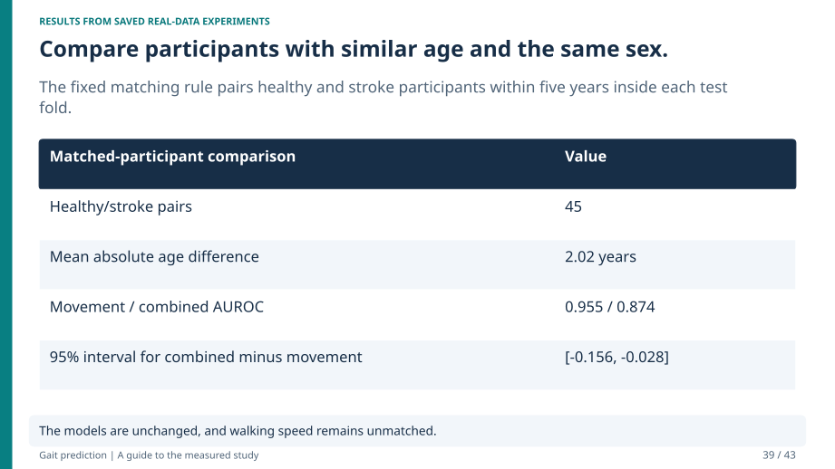
The models are unchanged, and walking speed remains unmatched.
Speaker notes for slide 39
Purpose
The demographic analysis checks whether the laboratory finding persists when healthy and stroke participants are more comparable in age and sex. This is a sensitivity analysis of the saved scores, rather than a new model fit.
Explanation
The matching rule pairs participants of the same recorded sex, within five years of age and within the same outer test fold. It first finds as many pairs as possible and then minimizes the total age difference. The rule is fixed before outcome scoring, and no person is reused.
Reading the visual
The result contains 45 pairs, or 90 participants, including 16 female and 29 male pairs. The four folds contain 11, 12, 11 and 11 pairs. Movement AUROC is 0.955 and Combined AUROC is 0.874, so the direction of the comparison remains the same.
Evidence and limits
The Combined-minus-Movement difference is -0.081, with conditional interval [-0.156, -0.028]. Resampling carries each whole matched pair within its fold. The main 178-person evaluation remains unchanged. Matching does not remove all confounding, and walking speed is not matched because it may itself reflect the effects of stroke.
Transition
Demographic balance addresses one part of generalization. We now bring the laboratory and public-video evidence together to examine the measurement limits that still remain.
Sources: Independent participant study · Laboratory control and stroke dataset
Plain-language guide to M, R and S
Movement score M
This score summarizes what the movement looks like. In the video study, its 16 measurements describe knee posture, how far the ankles move, changes in movement speed, trunk tilt, and differences between the two sides. The laboratory study instead uses 12 measurements of joint-angle levels and ranges. M compares the observed pattern with the normal fitting group. A larger score means a more unusual combination of these visible measurements.
Cross-leg score R
First, compare two predictions of the same hidden movement. Both retain the initial own-leg estimate. One adds a correction using only that leg, while the other adds a correction that can also see the opposite leg. Subtract the both-leg squared error from the own-leg squared error to measure the added benefit. Next, compare the left-leg and right-leg benefits with separate normal references. The same reserved reference group supplies both sides. R is larger when those benefits are unusually high or unusually low.
What normal-reference scaling means
For each leg, the study subtracts the normal reference mean benefit from the observed benefit. It then divides by an estimated normal standard deviation, which measures the spread of reference benefits, and squares the result. R averages these two squared departures. This is the meaning of calibration here. It measures departure from the reference; it does not produce a probability of disease. Each video fold has five separate normal reference recordings. Each laboratory fold has 20 separate healthy reference participants.
Combined score S
S adds the movement score M and the cross-leg score R, then divides by two. Thus it gives the two numerical scores fixed equal weight. Equal weights do not guarantee that the two scores have equally reliable scales or equal influence on ranking. The experiment tests whether this particular average improves detection.
Prediction benefit and detection accuracy
Prediction benefit means a reduction in error for a hidden movement. Detection accuracy means better separation of normal-labeled and abnormal-labeled recordings. A useful prediction benefit does not automatically improve detection. AUROC summarizes how often an abnormal recording receives a higher score than a normal recording; 0.5 is chance ranking and 1.0 is perfect ranking on the evaluated data. Here, ranking is measured within each held-out test group, then averaged with fixed weights.
Read the slide as text
RESULTS FROM SAVED REAL-DATA EXPERIMENTS
Compare participants with similar age and the same sex.
The fixed matching rule pairs healthy and stroke participants within five years inside each test
fold.
The models are unchanged, and walking speed remains unmatched.
Gait prediction | A guide to the measured study
39 / 43
Matched-participant comparison
Value
Healthy/stroke pairs
45
Mean absolute age difference
2.02 years
Movement / combined AUROC
0.955 / 0.874
95% interval for combined minus movement
[-0.156, -0.028]
40. Recording conditions still limit what we can conclude.
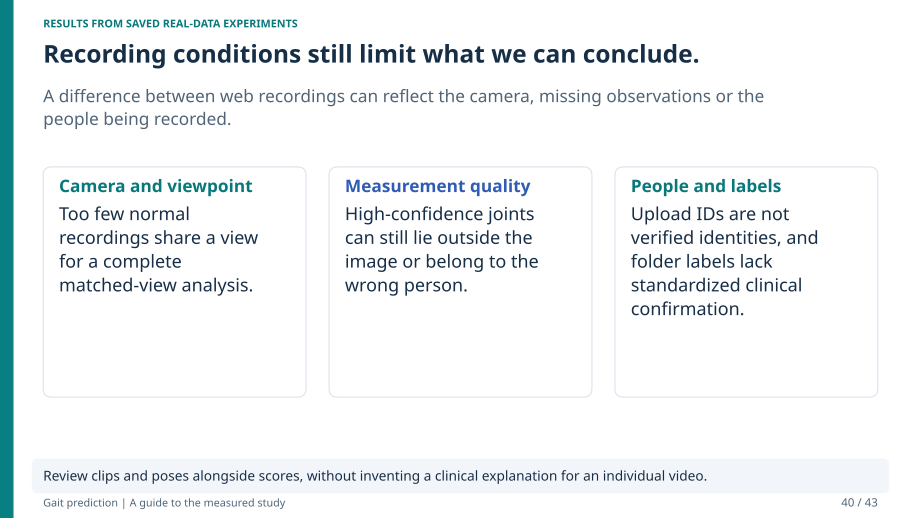
Review clips and poses alongside scores, without inventing a clinical explanation for an individual video.
Speaker notes for slide 40
Purpose
This slide explains why neither dataset supports unrestricted clinical claims. Prediction and anomaly scores depend on what was measured, how the recording was made and which people entered the evaluation, as well as on their movement.
Explanation
GAVD identifies recording sources rather than verified unique people. Camera view, apparent body size, assistance, overlapping limbs and edited layouts can change the estimated skeleton. All 28 normal recordings contributed to exploratory development, and extra windows from those recordings do not create new independent participants.
Reading the visual
Use the selected videos and pose overlays to identify visible measurement problems, without diagnosing the person from the example. Ten high- and low-error cases were chosen by a fixed review rule. Checks of three frames help reveal problems but do not verify continuous tracking throughout a clip.
Evidence and limits
The boundary audit finds high-confidence lower-leg points outside the decoded image in 13 of 28 normal and 83 of 276 abnormal recordings. The corresponding pooled point fractions are about 0.43% and 0.24%. Confidence is therefore not proof of visibility. These observations do not trigger outcome-based exclusions or refitting, and the laboratory study does not validate GAVD's clinical labels.
Transition
With these limits visible, we can state the contribution at the level supported by the measured prediction and detection comparisons.
Sources: Interpretation limits · Confidence filtering and selection shift · Independent notebooks 12–17
Read the slide as text
RESULTS FROM SAVED REAL-DATA EXPERIMENTS
Recording conditions still limit what we can conclude.
A difference between web recordings can reflect the camera, missing observations or the
people being recorded.
Review clips and poses alongside scores, without inventing a clinical explanation for an individual video.
Gait prediction | A guide to the measured study
40 / 43
Camera and viewpoint
Too few normal
recordings share a view
for a complete
matched-view analysis.
Measurement quality
High-confidence joints
can still lie outside the
image or belong to the
wrong person.
People and labels
Upload IDs are not
verified identities, and
folder labels lack
standardized clinical
confirmation.
41. The method makes cross-leg evidence easier to examine.
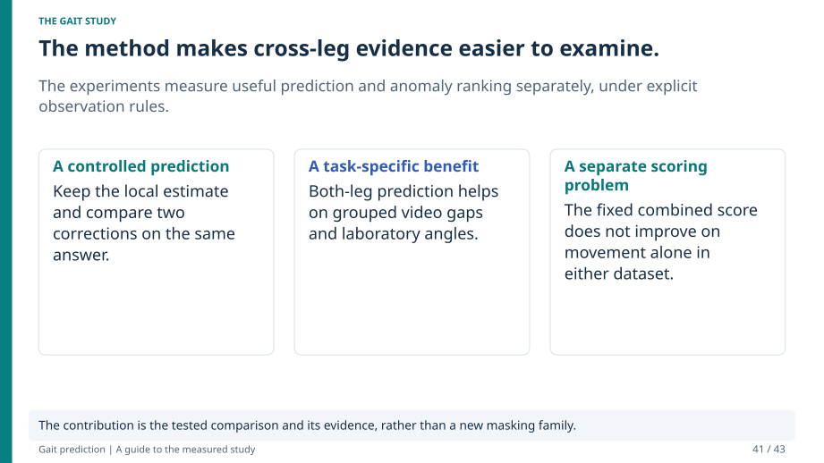
The contribution is the tested comparison and its evidence, rather than a new masking family.
Speaker notes for slide 41
Purpose
The central contribution is a controlled distinction between learning to complete movement and learning to detect abnormal movement. The experiments make that distinction observable through shared targets, restricted inputs, explicit comparison models and a separate participant-based study.
Explanation
In GAVD's Grouped hiding task, the random-trained Both-leg correction reduces error by 19.5% relative to the Own-leg correction. In the laboratory comparison, the corresponding reduction is 5.2%. Anatomical training separately improves grouped-task error by 7.7% relative to Random training for the same both-leg predictor. These percentages answer different questions.
Reading the visual
Connect each result to its own comparator and measurement system. Scattered hiding leaves the normal benefit uncertain for Random and Anatomical training. The positive grouped-task and laboratory findings therefore support particular prediction conditions, while the Combined score's lower AUROC shows that completion gain alone does not guarantee detection gain.
Evidence and limits
The linked manuscript, saved results and limitation records keep all these outcomes together. Unequal feature ranks, limited normal references and recording-related effects constrain interpretation. The experiments do not recover a neurological mechanism or establish a universally superior mask, and the additional completion intervals remain descriptive analyses of fixed predictions.
Transition
The next slide shows how the six independent notebooks let another researcher inspect these comparisons, their data context and the evidence behind each claim.
Sources: Verified study results · Interpretation limits · Neurological evidence and novelty advice · Accessible manuscript and technical notes
Plain-language guide to M, R and S
Movement score M
This score summarizes what the movement looks like. In the video study, its 16 measurements describe knee posture, how far the ankles move, changes in movement speed, trunk tilt, and differences between the two sides. The laboratory study instead uses 12 measurements of joint-angle levels and ranges. M compares the observed pattern with the normal fitting group. A larger score means a more unusual combination of these visible measurements.
Cross-leg score R
First, compare two predictions of the same hidden movement. Both retain the initial own-leg estimate. One adds a correction using only that leg, while the other adds a correction that can also see the opposite leg. Subtract the both-leg squared error from the own-leg squared error to measure the added benefit. Next, compare the left-leg and right-leg benefits with separate normal references. The same reserved reference group supplies both sides. R is larger when those benefits are unusually high or unusually low.
What normal-reference scaling means
For each leg, the study subtracts the normal reference mean benefit from the observed benefit. It then divides by an estimated normal standard deviation, which measures the spread of reference benefits, and squares the result. R averages these two squared departures. This is the meaning of calibration here. It measures departure from the reference; it does not produce a probability of disease. Each video fold has five separate normal reference recordings. Each laboratory fold has 20 separate healthy reference participants.
Combined score S
S adds the movement score M and the cross-leg score R, then divides by two. Thus it gives the two numerical scores fixed equal weight. Equal weights do not guarantee that the two scores have equally reliable scales or equal influence on ranking. The experiment tests whether this particular average improves detection.
Prediction benefit and detection accuracy
Prediction benefit means a reduction in error for a hidden movement. Detection accuracy means better separation of normal-labeled and abnormal-labeled recordings. A useful prediction benefit does not automatically improve detection. AUROC summarizes how often an abnormal recording receives a higher score than a normal recording; 0.5 is chance ranking and 1.0 is perfect ranking on the evaluated data. Here, ranking is measured within each held-out test group, then averaged with fixed weights.
Read the slide as text
THE GAIT STUDY
The method makes cross-leg evidence easier to examine.
The experiments measure useful prediction and anomaly ranking separately, under explicit
observation rules.
The contribution is the tested comparison and its evidence, rather than a new masking family.
Gait prediction | A guide to the measured study
41 / 43
A controlled prediction
Keep the local estimate
and compare two
corrections on the same
answer.
A task-specific benefit
Both-leg prediction helps
on grouped video gaps
and laboratory angles.
A separate scoring
problem
The fixed combined score
does not improve on
movement alone in
either dataset.
42. Six notebooks explain how the evidence is produced.
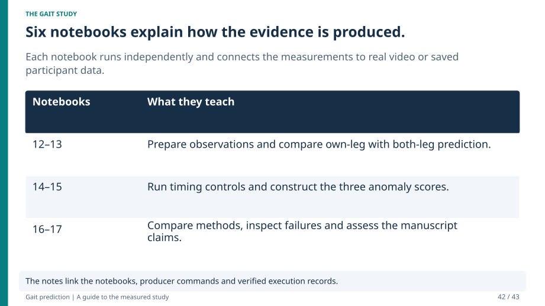
The notes link the notebooks, producer commands and verified execution records.
Speaker notes for slide 42
Purpose
The six notebooks provide an accessible route from real observations to the study's conclusions. Each notebook can be opened independently, so understanding a result does not depend on variables left in memory by a previous tutorial.
Explanation
Notebook 12 introduces the population and video context, and notebook 13 explains the prediction comparison. Notebook 14 constructs timing edits, notebook 15 calculates Movement M, Cross-leg R and Combined S, and notebook 16 evaluates baselines and classifiers. Notebook 17 connects failure examples, laboratory replication and the limits of the claims.
Reading the visual
Follow the notebook map as a learning sequence, while treating each page as a separate executable document. Real clips and pose overlays provide context for the arrays. Saved run identities and file hashes connect displayed figures to the actual experiments rather than to illustrative replacement data.
Evidence and limits
From the repository root, run uv sync --project experiments/aaai, then uv run --project experiments/aaai jupyter lab experiments/aaai. The root .env sets AAAI_ITERATION02_RUN_DIR to the verified run listed in the README. The execution record documents fresh-kernel runs of notebooks 12 through 17; it should be checked alongside the displayed outputs.
Transition
Having made the evidence inspectable, we can finish by identifying the specific new experiments that would most improve the next research claim.
Sources: Independent notebooks 12–17 · Executed protocol
Read the slide as text
THE GAIT STUDY
Six notebooks explain how the evidence is produced.
Each notebook runs independently and connects the measurements to real video or saved
participant data.
The notes link the notebooks, producer commands and verified execution records.
Gait prediction | A guide to the measured study
42 / 43
Notebooks
What they teach
12–13
Prepare observations and compare own-leg with both-leg prediction.
14–15
Run timing controls and construct the three anomaly scores.
16–17
Compare methods, inspect failures and assess the manuscript
claims.
43. The next experiment should test when cross-leg scores help.
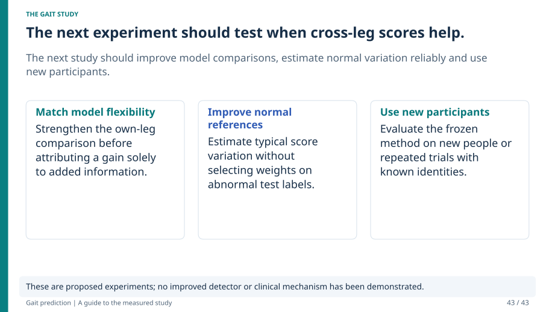
These are proposed experiments; no improved detector or clinical mechanism has been demonstrated.
Speaker notes for slide 43
Purpose
The next study should resolve the uncertainties exposed by these results with a small number of testable questions. A stronger claim will come from evidence that separates model flexibility, score construction and population generalization.
Explanation
First, compare own-leg and both-leg features with tighter control of effective model capacity, using fitting-normal data to choose any rank or regularization constraint. Second, test whether estimates of normal score variation are reliable and account for left and right benefits that change together under a protocol fixed before evaluation. These are proposed experiments, not methods already shown to repair detection.
Reading the visual
Treat the roadmap as three connected stages: clarify what the predictor learns, define how its output becomes an anomaly score, and evaluate that score on new participants. The population stage needs known identities, better recording metadata and relevant clinical measurements, with training and evaluation separated at the person level.
Evidence and limits
The current record supplies concrete reasons for each priority: unequal feature ranks, different Movement and Cross-leg score distributions, sparse timing context and limited GAVD normal coverage. Additional training seeds and controlled JEPA comparisons could measure robustness, but their outcomes remain unknown. New evaluation participants are necessary to move beyond exploratory reuse of existing recordings.
Transition
The study closes with a bounded finding: cross-leg context can improve completion, while useful anomaly detection requires its own validation. The proposed work is designed to test when those two benefits can coincide.
Sources: ASTAD4 official requirements · Interpretation limits · Accessible manuscript and technical notes
Plain-language guide to M, R and S
Movement score M
This score summarizes what the movement looks like. In the video study, its 16 measurements describe knee posture, how far the ankles move, changes in movement speed, trunk tilt, and differences between the two sides. The laboratory study instead uses 12 measurements of joint-angle levels and ranges. M compares the observed pattern with the normal fitting group. A larger score means a more unusual combination of these visible measurements.
Cross-leg score R
First, compare two predictions of the same hidden movement. Both retain the initial own-leg estimate. One adds a correction using only that leg, while the other adds a correction that can also see the opposite leg. Subtract the both-leg squared error from the own-leg squared error to measure the added benefit. Next, compare the left-leg and right-leg benefits with separate normal references. The same reserved reference group supplies both sides. R is larger when those benefits are unusually high or unusually low.
What normal-reference scaling means
For each leg, the study subtracts the normal reference mean benefit from the observed benefit. It then divides by an estimated normal standard deviation, which measures the spread of reference benefits, and squares the result. R averages these two squared departures. This is the meaning of calibration here. It measures departure from the reference; it does not produce a probability of disease. Each video fold has five separate normal reference recordings. Each laboratory fold has 20 separate healthy reference participants.
Combined score S
S adds the movement score M and the cross-leg score R, then divides by two. Thus it gives the two numerical scores fixed equal weight. Equal weights do not guarantee that the two scores have equally reliable scales or equal influence on ranking. The experiment tests whether this particular average improves detection.
Prediction benefit and detection accuracy
Prediction benefit means a reduction in error for a hidden movement. Detection accuracy means better separation of normal-labeled and abnormal-labeled recordings. A useful prediction benefit does not automatically improve detection. AUROC summarizes how often an abnormal recording receives a higher score than a normal recording; 0.5 is chance ranking and 1.0 is perfect ranking on the evaluated data. Here, ranking is measured within each held-out test group, then averaged with fixed weights.
Read the slide as text
THE GAIT STUDY
The next experiment should test when cross-leg scores help.
The next study should improve model comparisons, estimate normal variation reliably and use
new participants.
These are proposed experiments; no improved detector or clinical mechanism has been demonstrated.
Gait prediction | A guide to the measured study
43 / 43
Match model flexibility
Strengthen the own-leg
comparison before
attributing a gain solely
to added information.
Improve normal
references
Estimate typical score
variation without
selecting weights on
abnormal test labels.
Use new participants
Evaluate the frozen
method on new people or
repeated trials with
known identities.